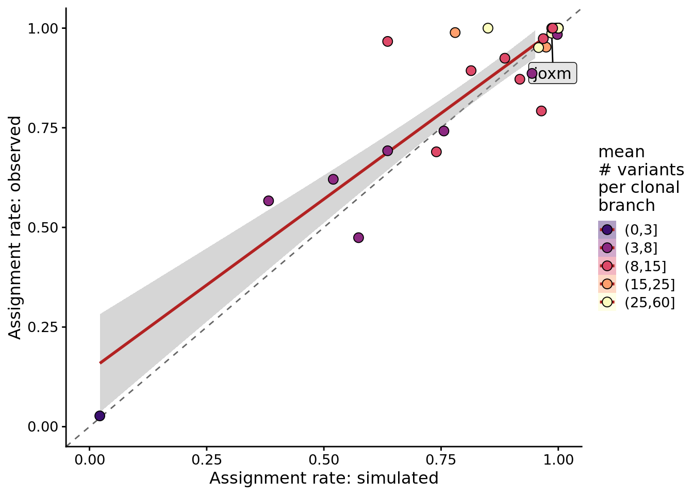
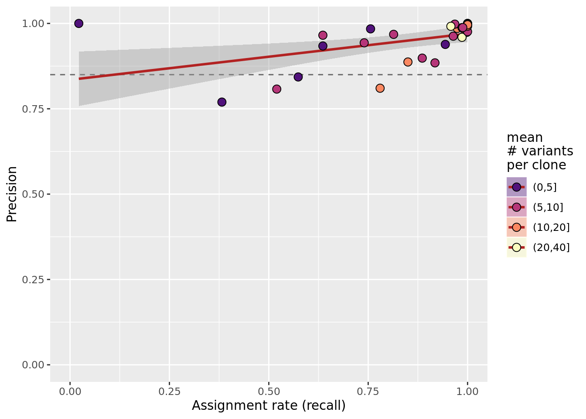

Simulation analysis: systematic and for all lines
Yuanhua Huang & Davis J. McCarthy
Last updated: 2019-10-30
Checks: 7 0
Knit directory: fibroblast-clonality/
This reproducible R Markdown analysis was created with workflowr (version 1.4.0). The Checks tab describes the reproducibility checks that were applied when the results were created. The Past versions tab lists the development history.
Great! Since the R Markdown file has been committed to the Git repository, you know the exact version of the code that produced these results.
Great job! The global environment was empty. Objects defined in the global environment can affect the analysis in your R Markdown file in unknown ways. For reproduciblity it’s best to always run the code in an empty environment.
The command set.seed(20180807) was run prior to running the code in the R Markdown file. Setting a seed ensures that any results that rely on randomness, e.g. subsampling or permutations, are reproducible.
Great job! Recording the operating system, R version, and package versions is critical for reproducibility.
Nice! There were no cached chunks for this analysis, so you can be confident that you successfully produced the results during this run.
Great job! Using relative paths to the files within your workflowr project makes it easier to run your code on other machines.
Great! You are using Git for version control. Tracking code development and connecting the code version to the results is critical for reproducibility. The version displayed above was the version of the Git repository at the time these results were generated.
Note that you need to be careful to ensure that all relevant files for the analysis have been committed to Git prior to generating the results (you can use wflow_publish or wflow_git_commit). workflowr only checks the R Markdown file, but you know if there are other scripts or data files that it depends on. Below is the status of the Git repository when the results were generated:
Ignored files:
Ignored: .DS_Store
Ignored: .Rhistory
Ignored: .Rproj.user/
Ignored: .vscode/
Ignored: code/.DS_Store
Ignored: code/selection/.DS_Store
Ignored: code/selection/.Rhistory
Ignored: code/selection/figures/
Ignored: data/.DS_Store
Ignored: logs/
Ignored: src/.DS_Store
Ignored: src/Rmd/.Rhistory
Untracked files:
Untracked: .dockerignore
Untracked: .dropbox
Untracked: .snakemake/
Untracked: Rplots.pdf
Untracked: Snakefile_clonality
Untracked: Snakefile_somatic_calling
Untracked: analysis/.ipynb_checkpoints/
Untracked: analysis/assess_mutect2_fibro-ipsc_variant_calls.ipynb
Untracked: analysis/cardelino_fig1b.R
Untracked: analysis/cardelino_fig2b.R
Untracked: code/analysis_for_garx.Rmd
Untracked: code/selection/data/
Untracked: code/selection/fit-dist.nb
Untracked: code/selection/result-figure.R
Untracked: code/yuanhua/
Untracked: data/Melanoma-RegevGarraway-DFCI-scRNA-Seq/
Untracked: data/PRJNA485423/
Untracked: data/canopy/
Untracked: data/cell_assignment/
Untracked: data/cnv/
Untracked: data/de_analysis_FTv62/
Untracked: data/donor_info_070818.txt
Untracked: data/donor_info_core.csv
Untracked: data/donor_neutrality.tsv
Untracked: data/exome-point-mutations/
Untracked: data/fdr10.annot.txt.gz
Untracked: data/human_H_v5p2.rdata
Untracked: data/human_c2_v5p2.rdata
Untracked: data/human_c6_v5p2.rdata
Untracked: data/neg-bin-rsquared-petr.csv
Untracked: data/neutralitytestr-petr.tsv
Untracked: data/raw/
Untracked: data/sce_merged_donors_cardelino_donorid_all_qc_filt.rds
Untracked: data/sce_merged_donors_cardelino_donorid_all_with_qc_labels.rds
Untracked: data/sce_merged_donors_cardelino_donorid_unstim_qc_filt.rds
Untracked: data/sces/
Untracked: data/selection/
Untracked: data/simulations/
Untracked: data/variance_components/
Untracked: figures/
Untracked: output/differential_expression/
Untracked: output/differential_expression_cardelino-relax/
Untracked: output/donor_specific/
Untracked: output/line_info.tsv
Untracked: output/nvars_by_category_by_donor.tsv
Untracked: output/nvars_by_category_by_line.tsv
Untracked: output/variance_components/
Untracked: qolg_BIC.pdf
Untracked: references/
Untracked: reports/
Untracked: src/Rmd/DE_pathways_FTv62_callset_clones_pairwise_vs_base.unst_cells.carderelax.Rmd
Untracked: src/Rmd/Rplots.pdf
Untracked: src/Rmd/cell_assignment_cardelino-relax_template.Rmd
Untracked: tree.txt
Note that any generated files, e.g. HTML, png, CSS, etc., are not included in this status report because it is ok for generated content to have uncommitted changes.
These are the previous versions of the R Markdown and HTML files. If you’ve configured a remote Git repository (see ?wflow_git_remote), click on the hyperlinks in the table below to view them.
| File | Version | Author | Date | Message |
|---|---|---|---|---|
| Rmd | 15c31aa | Davis McCarthy | 2019-10-30 | Fixing bug in simulations analysis |
| Rmd | 6bb019e | Davis McCarthy | 2019-10-30 | Fixing bug in simulations analysis |
| Rmd | 550176f | Davis McCarthy | 2019-10-30 | Updating analysis to reflect accepted ms |
| html | 1b91b41 | davismcc | 2018-11-09 | Build site. |
| Rmd | 0e164ba | davismcc | 2018-11-09 | Updating analyses to rejig some figures. |
| html | 8729e02 | davismcc | 2018-11-09 | Build site. |
| html | 0540cdb | davismcc | 2018-09-02 | Build site. |
| html | f0ed980 | davismcc | 2018-08-31 | Build site. |
| Rmd | 1310c93 | davismcc | 2018-08-30 | Tweaking plots |
| Rmd | 846dec4 | davismcc | 2018-08-29 | Some small tweaks/additions to analyses |
| html | ca3438f | davismcc | 2018-08-29 | Build site. |
| Rmd | dc78a95 | davismcc | 2018-08-29 | Minor updates to analyses. |
| html | e573f2f | davismcc | 2018-08-27 | Build site. |
| Rmd | 678546d | davismcc | 2018-08-27 | Suppressing warnings. |
| html | 9ec2a59 | davismcc | 2018-08-26 | Build site. |
| Rmd | cae617f | davismcc | 2018-08-26 | Updating simulation analyses |
| html | 36acf15 | davismcc | 2018-08-25 | Build site. |
| Rmd | d618fe5 | davismcc | 2018-08-25 | Updating analyses |
| html | 090c1b9 | davismcc | 2018-08-24 | Build site. |
| html | 02a8343 | davismcc | 2018-08-24 | Build site. |
| Rmd | 43f15d6 | davismcc | 2018-08-24 | Adding data pre-processing workflow and updating analyses. |
| html | 43f15d6 | davismcc | 2018-08-24 | Adding data pre-processing workflow and updating analyses. |
Load libraries and simulation results
knitr::opts_chunk$set(echo = TRUE, warning = FALSE, message = FALSE)
dir.create("figures/simulations", showWarnings = FALSE, recursive = TRUE)
library(ggpubr)
library(tidyverse)
library(cardelino)
library(viridis)
library(cowplot)
library(latex2exp)
library(ggrepel)
lines <- c("euts", "fawm", "feec", "fikt", "garx", "gesg", "heja", "hipn",
"ieki", "joxm", "kuco", "laey", "lexy", "naju", "nusw", "oaaz",
"oilg", "pipw", "puie", "qayj", "qolg", "qonc", "rozh", "sehl",
"ualf", "vass", "vuna", "wahn", "wetu", "xugn", "zoxy", "vils")Simulation experiments
Define functions for simulation.
# assess cardelino with simulation
dat_dir <- "data/"
data(config_all)
data(simulation_input)
simu_input <- list("D" = D_input)
get_prob_label <- function(X){
max_idx <- rep(0, nrow(X))
for (j in seq_len(nrow(X))) {
max_idx[j] <- which.max(X[j, ])
}
max_idx
}
get_prob_value <- function(X, mode = "best") {
max_val <- rep(0, nrow(X))
for (i in seq_len(nrow(X))) {
sorted_val <- sort(X[i,], decreasing = TRUE)
if (mode == "delta") {
max_val[i] <- sorted_val[1] - sorted_val[2]
} else if (mode == "second") {
max_val[i] <- sorted_val[2]
} else {#default mode: best
max_val[i] <- sorted_val[1]
}
}
max_val
}
demuxlet <- function(A, D, Config, theta1 = 0.5, theta0 = 0.01) {
P0_mat <- dbinom(A, D, theta0, log = TRUE)
P1_mat <- dbinom(A, D, theta1, log = TRUE)
P0_mat[which(is.na(P0_mat))] <- 0
P1_mat[which(is.na(P1_mat))] <- 0
logLik_mat <- t(P0_mat) %*% (1 - Config) + t(P1_mat) %*% Config
prob_mat <- exp(logLik_mat) / rowSums(exp(logLik_mat))
prob_mat
}
simulate_joint <- function(Config_all, D_all, n_clone = 4, mut_size = 5,
missing = NULL, error_mean = c(0.01, 0.44),
error_var = c(30, 4.8), n_repeat = 1) {
simu_data_full <- list()
for (i in seq_len(n_repeat)) {
Config <- sample(Config_all[[n_clone - 2]], size = 1)[[1]]
Config <- matrix(rep(c(t(Config)), mut_size), ncol = ncol(Config),
byrow = TRUE)
row.names(Config) <- paste0("SNV", seq_len(nrow(Config)))
colnames(Config) <- paste0("Clone", seq_len(ncol(Config)))
D_input <- sample_seq_depth(D_all, n_cells = 200, missing_rate = missing,
n_sites = nrow(Config))
sim_dat <- sim_read_count(Config, D_input, Psi = NULL, cell_num = 200,
means = error_mean, vars = error_var)
sim_dat[["Config"]] <- Config
simu_data_full[[i]] <- sim_dat
}
simu_data_full
}
assign_score <- function(prob_mat, simu_mat, threshold=0.2, mode="delta") {
assign_0 <- get_prob_label(simu_mat)
assign_1 <- get_prob_label(prob_mat)
prob_val <- get_prob_value(prob_mat, mode = mode)
idx <- prob_val >= threshold
rt_list <- list("ass" = mean(idx),
"acc" = mean(assign_0 == assign_1),
"acc_ass" = mean((assign_0 == assign_1)[idx]))
rt_list
}
assign_curve <- function(prob_mat, simu_mat, mode="delta"){
assign_0 <- get_prob_label(simu_mat)
assign_1 <- get_prob_label(prob_mat)
prob_val <- get_prob_value(prob_mat, mode = mode)
thresholds <- sort(unique(prob_val))
ACC <- rep(0, length(thresholds))
ASS <- rep(0, length(thresholds))
for (i in seq_len(length(thresholds))) {
idx <- prob_val >= thresholds[i]
ASS[i] <- mean(idx)
ACC[i] <- mean((assign_0 == assign_1)[idx])
}
thresholds <- c(thresholds, 1.0)
ACC <- c(ACC, 1.0)
ASS <- c(ASS, 0.0)
AUC <- AUC_acc_ass <- 0.0
for (i in seq_len(length(thresholds) - 1)) {
AUC <- AUC + 0.5 * (thresholds[i] - thresholds[i + 1]) *
(ACC[i] + ACC[i + 1])
AUC_acc_ass <- AUC_acc_ass + 0.5 * (ASS[i] - ASS[i + 1]) *
(ACC[i] + ACC[i + 1])
}
AUC <- AUC / (thresholds[1] - thresholds[length(thresholds)])
AUC_acc_ass <- AUC_acc_ass / (ASS[1] - ASS[length(thresholds)])
rt_list <- list("ACC" = ACC, "ASS" = ASS, "AUC" = AUC,
"AUC_acc_ass" = AUC_acc_ass, "thresholds" = thresholds)
rt_list
}
assign_macro_ROC <- function(prob_mat, simu_mat) {
thresholds <- seq(0, 0.999, 0.001)
ACC <- rep(0, length(thresholds))
ASS <- rep(0, length(thresholds))
FPR <- rep(0, length(thresholds))
TPR <- rep(0, length(thresholds))
for (i in seq_len(length(thresholds))) {
idx <- prob_mat >= thresholds[i]
ASS[i] <- mean(idx) # not very meaningful
ACC[i] <- mean(simu_mat[idx])
FPR[i] <- sum(simu_mat[idx] == 0) / sum(simu_mat == 0)
TPR[i] <- sum(simu_mat[idx] == 1) / sum(simu_mat == 1)
}
AUC <- 0.0
for (i in seq_len(length(thresholds) - 1)) {
AUC <- AUC + 0.5 * (FPR[i] - FPR[i + 1]) * (TPR[i] + TPR[i + 1])
}
rt_list <- list("FPR" = FPR, "TPR" = TPR, "AUC" = AUC,
"thresholds" = thresholds, "ACC" = ACC, "ASS" = ASS)
rt_list
}Run simulations.
set.seed(1)
ACC_all <- c()
ASS_all <- c()
AUC_all <- c()
ERR_all <- c()
labels_all <- c()
method_all <- c()
variable_all <- c()
type_use <- c("mut_size", "n_clone", "missing", "FNR", "shapes1")
value_list <- list(c(3, 5, 7, 10, 15, 25),
seq(3, 8),
seq(0.7, 0.95, 0.05),
seq(0.35, 0.6, 0.05),
c(0.5, 1.0, 2.0, 4.0, 8.0, 16.0))
for (mm in seq_len(length(value_list))) {
values_all <- value_list[[mm]]
for (k in seq_len(length(values_all))) {
if (mm == 1) {
simu_data <- simulate_joint(Config_all, simu_input$D, n_clone = 4,
mut_size = values_all[k], missing = 0.8,
error_mean = c(0.01, 0.44), n_repeat = 20)
} else if (mm == 2) {
simu_data <- simulate_joint(Config_all, simu_input$D,
n_clone = values_all[k], mut_size = 10,
missing = 0.8, error_mean = c(0.01, 0.44),
n_repeat = 20)
} else if (mm == 3) {
simu_data <- simulate_joint(Config_all, simu_input$D, n_clone = 4,
mut_size = 10, missing = values_all[k],
error_mean = c(0.01, 0.44), n_repeat = 20)
} else if (mm == 4) {
simu_data <- simulate_joint(Config_all, simu_input$D, n_clone = 4,
mut_size = 10, missing = 0.8,
error_mean = c(0.01, values_all[k]),
n_repeat = 20)
} else if (mm == 5) {
simu_data <- simulate_joint(Config_all, simu_input$D, n_clone = 4,
mut_size = 10, missing = 0.8,
error_mean = c(0.01, 0.44),
error_var = c(30, values_all[k]),
n_repeat = 20)
}
for (d_tmp in simu_data) {
prob_all <- list()
methods_use <- c("demuxlet", "Binom_EM", "Binom_Gibbs",
"Binom_gmline")
prob_all[[1]] <- demuxlet(d_tmp$A_sim, d_tmp$D_sim, d_tmp$Config,
theta0 = mean(d_tmp$theta0_binom, na.rm = TRUE))
prob_all[[2]] <- clone_id_EM(d_tmp$A_sim, d_tmp$D_sim, d_tmp$Config,
Psi = NULL, verbose = FALSE)$prob
prob_all[[3]] <- clone_id_Gibbs(d_tmp$A_sim, d_tmp$D_sim,
d_tmp$Config, Psi = NULL,
min_iter = 1000, wise = "variant",
prior1 = c(2.11, 2.69),
verbose = FALSE)$prob
for (i in seq_len(length(prob_all))) {
prob_mat <- prob_all[[i]]
assign_scr <- assign_score(prob_mat, d_tmp$I_sim,
threshold = 0.5001,
mode = "best")
ACC_all <- c(ACC_all, assign_scr$acc_ass)
ASS_all <- c(ASS_all, assign_scr$ass)
AUC_all <- c(AUC_all, assign_curve(prob_mat, d_tmp$I_sim,
mode = "best")$AUC_acc_ass)
ERR_all <- c(ERR_all, mean(abs(prob_mat - d_tmp$I_sim)))
labels_all <- c(labels_all, values_all[k])
method_all <- c(method_all, methods_use[i])
variable_all <- c(variable_all, type_use[mm])
}
}
}
}[1] "Converged in 1000 iterations."
DIC: 913.44 D_mean: 753.35 D_post: 719.68 logLik_var: 48.44
[1] "Converged in 1000 iterations."
DIC: 655.47 D_mean: 487.89 D_post: 454.2 logLik_var: 50.32
[1] "Converged in 1000 iterations."
DIC: 356.11 D_mean: 187.82 D_post: 159.53 logLik_var: 49.15
[1] "Converged in 1000 iterations."
DIC: 814.96 D_mean: 473.63 D_post: 429.81 logLik_var: 96.29
[1] "Converged in 1000 iterations."
DIC: 673.35 D_mean: 487.88 D_post: 458.21 logLik_var: 53.78
[1] "Converged in 1000 iterations."
DIC: 491.34 D_mean: 357.15 D_post: 335.24 logLik_var: 39.02
[1] "Converged in 1000 iterations."
DIC: 506.77 D_mean: 294.82 D_post: 268.15 logLik_var: 59.66
[1] "Converged in 1000 iterations."
DIC: 441.63 D_mean: 271.02 D_post: 252.53 logLik_var: 47.27
[1] "Converged in 1000 iterations."
DIC: 855.84 D_mean: 675.46 D_post: 644.05 logLik_var: 52.95
[1] "Converged in 1000 iterations."
DIC: 383.81 D_mean: 199.85 D_post: 180.5 logLik_var: 50.83
[1] "Converged in 1000 iterations."
DIC: 421.28 D_mean: 304.42 D_post: 280.13 logLik_var: 35.29
[1] "Converged in 1000 iterations."
DIC: 544.09 D_mean: 261.49 D_post: 230.51 logLik_var: 78.39
[1] "Converged in 1000 iterations."
DIC: 414.86 D_mean: 270.46 D_post: 244.69 logLik_var: 42.54
[1] "Converged in 1000 iterations."
DIC: 653.6 D_mean: 438.09 D_post: 404.18 logLik_var: 62.36
[1] "Converged in 1000 iterations."
DIC: 404.27 D_mean: 202.13 D_post: 183.54 logLik_var: 55.18
[1] "Converged in 1000 iterations."
DIC: 654 D_mean: 406.5 D_post: 367.37 logLik_var: 71.66
[1] "Converged in 1000 iterations."
DIC: 403.04 D_mean: 315.33 D_post: 295.32 logLik_var: 26.93
[1] "Converged in 1000 iterations."
DIC: 349 D_mean: 185.9 D_post: 173.04 logLik_var: 43.99
[1] "Converged in 1000 iterations."
DIC: 158.36 D_mean: 87.76 D_post: 79.21 logLik_var: 19.79
[1] "Converged in 1000 iterations."
DIC: 851.26 D_mean: 540.68 D_post: 516.86 logLik_var: 83.6
[1] "Converged in 1000 iterations."
DIC: 516.68 D_mean: 287.05 D_post: 254.37 logLik_var: 65.58
[1] "Converged in 1000 iterations."
DIC: 633.26 D_mean: 440.23 D_post: 417.36 logLik_var: 53.97
[1] "Converged in 1000 iterations."
DIC: 1434.4 D_mean: 1199.33 D_post: 1148.76 logLik_var: 71.41
[1] "Converged in 1000 iterations."
DIC: 750.14 D_mean: 459.73 D_post: 417.18 logLik_var: 83.24
[1] "Converged in 1000 iterations."
DIC: 618.16 D_mean: 368.2 D_post: 332.35 logLik_var: 71.45
[1] "Converged in 1000 iterations."
DIC: 1338.37 D_mean: 1166.04 D_post: 1118.09 logLik_var: 55.07
[1] "Converged in 1000 iterations."
DIC: 858.12 D_mean: 707.29 D_post: 665.86 logLik_var: 48.07
[1] "Converged in 1000 iterations."
DIC: 822.37 D_mean: 630.35 D_post: 605.63 logLik_var: 54.18
[1] "Converged in 1000 iterations."
DIC: 765.54 D_mean: 471.75 D_post: 421.29 logLik_var: 86.06
[1] "Converged in 1000 iterations."
DIC: 853.66 D_mean: 611.45 D_post: 562.62 logLik_var: 72.76
[1] "Converged in 1000 iterations."
DIC: 1014.81 D_mean: 730.46 D_post: 675.58 logLik_var: 84.81
[1] "Converged in 1000 iterations."
DIC: 868.75 D_mean: 607.01 D_post: 560.32 logLik_var: 77.11
[1] "Converged in 1000 iterations."
DIC: 881.18 D_mean: 687.15 D_post: 644.22 logLik_var: 59.24
[1] "Converged in 1000 iterations."
DIC: 789.61 D_mean: 657.59 D_post: 624.09 logLik_var: 41.38
[1] "Converged in 1000 iterations."
DIC: 821.42 D_mean: 510.84 D_post: 484.79 logLik_var: 84.16
[1] "Converged in 1000 iterations."
DIC: 883.63 D_mean: 492.15 D_post: 462.38 logLik_var: 105.31
[1] "Converged in 1000 iterations."
DIC: 1011.42 D_mean: 782.03 D_post: 733.1 logLik_var: 69.58
[1] "Converged in 1000 iterations."
DIC: 924.66 D_mean: 728.64 D_post: 685.58 logLik_var: 59.77
[1] "Converged in 1000 iterations."
DIC: 694.75 D_mean: 470.44 D_post: 427.56 logLik_var: 66.8
[1] "Converged in 1000 iterations."
DIC: 595.66 D_mean: 387.95 D_post: 336.21 logLik_var: 64.86
[1] "Converged in 1000 iterations."
DIC: 1068.64 D_mean: 848.7 D_post: 806.56 logLik_var: 65.52
[1] "Converged in 1000 iterations."
DIC: 961.92 D_mean: 829.43 D_post: 786.69 logLik_var: 43.81
[1] "Converged in 1000 iterations."
DIC: 995.46 D_mean: 828.68 D_post: 783.37 logLik_var: 53.02
[1] "Converged in 1000 iterations."
DIC: 627.31 D_mean: 400.17 D_post: 359.4 logLik_var: 66.98
[1] "Converged in 1000 iterations."
DIC: 1846.08 D_mean: 1611.9 D_post: 1555.15 logLik_var: 72.73
[1] "Converged in 1000 iterations."
DIC: 1089.6 D_mean: 776.96 D_post: 730.01 logLik_var: 89.9
[1] "Converged in 1000 iterations."
DIC: 755.44 D_mean: 414.78 D_post: 357.17 logLik_var: 99.57
[1] "Converged in 1000 iterations."
DIC: 1305.62 D_mean: 1119.32 D_post: 1078.47 logLik_var: 56.79
[1] "Converged in 1000 iterations."
DIC: 1371.41 D_mean: 1181.07 D_post: 1134.68 logLik_var: 59.18
[1] "Converged in 1000 iterations."
DIC: 764.73 D_mean: 586 D_post: 553.63 logLik_var: 52.77
[1] "Converged in 1000 iterations."
DIC: 1188.78 D_mean: 964.07 D_post: 903.2 logLik_var: 71.39
[1] "Converged in 1000 iterations."
DIC: 1613.55 D_mean: 1522.35 D_post: 1480.25 logLik_var: 33.32
[1] "Converged in 1000 iterations."
DIC: 670.68 D_mean: 495.23 D_post: 455.63 logLik_var: 53.76
[1] "Converged in 1000 iterations."
DIC: 1000.66 D_mean: 674.39 D_post: 623.3 logLik_var: 94.34
[1] "Converged in 1700 iterations."
DIC: 720.74 D_mean: 589.99 D_post: 561.98 logLik_var: 39.69
[1] "Converged in 1000 iterations."
DIC: 978.08 D_mean: 795.13 D_post: 742.77 logLik_var: 58.83
[1] "Converged in 1000 iterations."
DIC: 1072.77 D_mean: 823.02 D_post: 800.54 logLik_var: 68.06
[1] "Converged in 1000 iterations."
DIC: 882.38 D_mean: 676.82 D_post: 600.38 logLik_var: 70.5
[1] "Converged in 1000 iterations."
DIC: 1208.71 D_mean: 989.73 D_post: 918.1 logLik_var: 72.65
[1] "Converged in 1000 iterations."
DIC: 1304.5 D_mean: 1159.06 D_post: 1113.86 logLik_var: 47.66
[1] "Converged in 1000 iterations."
DIC: 1008.4 D_mean: 785.01 D_post: 729.61 logLik_var: 69.7
[1] "Converged in 1000 iterations."
DIC: 1028.66 D_mean: 811.32 D_post: 745.39 logLik_var: 70.82
[1] "Converged in 1000 iterations."
DIC: 1267.35 D_mean: 1096.34 D_post: 1039.52 logLik_var: 56.96
[1] "Converged in 1000 iterations."
DIC: 1399.09 D_mean: 1056.88 D_post: 996.3 logLik_var: 100.7
[1] "Converged in 1000 iterations."
DIC: 1096.72 D_mean: 867.47 D_post: 818.27 logLik_var: 69.61
[1] "Converged in 1000 iterations."
DIC: 1534.37 D_mean: 1285.11 D_post: 1214.35 logLik_var: 80
[1] "Converged in 1000 iterations."
DIC: 1266.53 D_mean: 1034.62 D_post: 977.53 logLik_var: 72.25
[1] "Converged in 1000 iterations."
DIC: 1428.53 D_mean: 1197.46 D_post: 1136.84 logLik_var: 72.92
[1] "Converged in 1000 iterations."
DIC: 1525.55 D_mean: 1355.44 D_post: 1316.01 logLik_var: 52.38
[1] "Converged in 1000 iterations."
DIC: 1604.09 D_mean: 1445.12 D_post: 1379.82 logLik_var: 56.07
[1] "Converged in 1000 iterations."
DIC: 1054.87 D_mean: 873.98 D_post: 831.06 logLik_var: 55.95
[1] "Converged in 1000 iterations."
DIC: 1892.46 D_mean: 1616.68 D_post: 1525.31 logLik_var: 91.79
[1] "Converged in 1000 iterations."
DIC: 1947.57 D_mean: 1786.08 D_post: 1735.74 logLik_var: 52.96
[1] "Converged in 1000 iterations."
DIC: 1137.15 D_mean: 1004.87 D_post: 955.45 logLik_var: 45.43
[1] "Converged in 1000 iterations."
DIC: 1051.39 D_mean: 829.53 D_post: 761.46 logLik_var: 72.48
[1] "Converged in 1000 iterations."
DIC: 1429.25 D_mean: 1158.49 D_post: 1087.09 logLik_var: 85.54
[1] "Converged in 1000 iterations."
DIC: 1974.69 D_mean: 1830.55 D_post: 1780.38 logLik_var: 48.58
[1] "Converged in 1000 iterations."
DIC: 1550.4 D_mean: 1241.09 D_post: 1163.67 logLik_var: 96.68
[1] "Converged in 1000 iterations."
DIC: 1361.38 D_mean: 926 D_post: 832.08 logLik_var: 132.32
[1] "Converged in 1000 iterations."
DIC: 1072.58 D_mean: 711.15 D_post: 632.51 logLik_var: 110.02
[1] "Converged in 1000 iterations."
DIC: 2306.06 D_mean: 2119.21 D_post: 2073.22 logLik_var: 58.21
[1] "Converged in 1000 iterations."
DIC: 1880.41 D_mean: 1771.84 D_post: 1715.44 logLik_var: 41.24
[1] "Converged in 1000 iterations."
DIC: 1504.74 D_mean: 1270.54 D_post: 1185.37 logLik_var: 79.84
[1] "Converged in 1000 iterations."
DIC: 1893.12 D_mean: 1595.62 D_post: 1515.8 logLik_var: 94.33
[1] "Converged in 1000 iterations."
DIC: 1417.21 D_mean: 1235.32 D_post: 1176.02 logLik_var: 60.3
[1] "Converged in 1000 iterations."
DIC: 2007.01 D_mean: 1749.77 D_post: 1666.47 logLik_var: 85.13
[1] "Converged in 1000 iterations."
DIC: 2993.19 D_mean: 2859.06 D_post: 2795.89 logLik_var: 49.32
[1] "Converged in 1000 iterations."
DIC: 1801.76 D_mean: 1569.94 D_post: 1494.58 logLik_var: 76.79
[1] "Converged in 1000 iterations."
DIC: 1694.05 D_mean: 1467.89 D_post: 1391.5 logLik_var: 75.64
[1] "Converged in 1000 iterations."
DIC: 1174.48 D_mean: 1044.03 D_post: 990.18 logLik_var: 46.08
[1] "Converged in 1000 iterations."
DIC: 2257.21 D_mean: 2186.39 D_post: 2149.45 logLik_var: 26.94
[1] "Converged in 1000 iterations."
DIC: 2051.16 D_mean: 1836.61 D_post: 1778.9 logLik_var: 68.07
[1] "Converged in 1000 iterations."
DIC: 1548.36 D_mean: 1322.55 D_post: 1259.83 logLik_var: 72.13
[1] "Converged in 1000 iterations."
DIC: 1673.7 D_mean: 1476.54 D_post: 1405.3 logLik_var: 67.1
[1] "Converged in 1000 iterations."
DIC: 1698.54 D_mean: 1585.65 D_post: 1529.8 logLik_var: 42.18
[1] "Converged in 1000 iterations."
DIC: 1212.82 D_mean: 1043.55 D_post: 979.14 logLik_var: 58.42
[1] "Converged in 1000 iterations."
DIC: 2957.64 D_mean: 2879.33 D_post: 2819.62 logLik_var: 34.5
[1] "Converged in 1000 iterations."
DIC: 2108.76 D_mean: 1894.03 D_post: 1822.7 logLik_var: 71.52
[1] "Converged in 1000 iterations."
DIC: 2596.78 D_mean: 2450.36 D_post: 2398.95 logLik_var: 49.46
[1] "Converged in 1000 iterations."
DIC: 1598.33 D_mean: 1422.45 D_post: 1338.61 logLik_var: 64.93
[1] "Converged in 1000 iterations."
DIC: 4024.37 D_mean: 3869.15 D_post: 3809.91 logLik_var: 53.61
[1] "Converged in 1000 iterations."
DIC: 2667.58 D_mean: 2594.28 D_post: 2530.76 logLik_var: 34.2
[1] "Converged in 1000 iterations."
DIC: 2344.79 D_mean: 2210.46 D_post: 2150.93 logLik_var: 48.46
[1] "Converged in 1000 iterations."
DIC: 2174.74 D_mean: 1995.4 D_post: 1940.74 logLik_var: 58.5
[1] "Converged in 1000 iterations."
DIC: 3027.94 D_mean: 2900.63 D_post: 2816.43 logLik_var: 52.88
[1] "Converged in 1000 iterations."
DIC: 2881.02 D_mean: 2756.29 D_post: 2688.95 logLik_var: 48.02
[1] "Converged in 1000 iterations."
DIC: 2559.2 D_mean: 2387.45 D_post: 2324.27 logLik_var: 58.73
[1] "Converged in 1000 iterations."
DIC: 2193.38 D_mean: 1950.17 D_post: 1883.78 logLik_var: 77.4
[1] "Converged in 1000 iterations."
DIC: 2888.3 D_mean: 2749.65 D_post: 2679.26 logLik_var: 52.26
[1] "Converged in 1000 iterations."
DIC: 2785.52 D_mean: 2669.48 D_post: 2594.25 logLik_var: 47.82
[1] "Converged in 1000 iterations."
DIC: 2113.83 D_mean: 1923.85 D_post: 1838.83 logLik_var: 68.75
[1] "Converged in 1000 iterations."
DIC: 4876.5 D_mean: 4734.07 D_post: 4650.45 logLik_var: 56.51
[1] "Converged in 1000 iterations."
DIC: 3548.87 D_mean: 3449.4 D_post: 3381.3 logLik_var: 41.89
[1] "Converged in 1000 iterations."
DIC: 2399.23 D_mean: 2292.21 D_post: 2229.82 logLik_var: 42.35
[1] "Converged in 1000 iterations."
DIC: 4070.21 D_mean: 3978.66 D_post: 3902.01 logLik_var: 42.05
[1] "Converged in 1000 iterations."
DIC: 2703.02 D_mean: 2560.41 D_post: 2493.72 logLik_var: 52.33
[1] "Converged in 1000 iterations."
DIC: 3305.21 D_mean: 3206.64 D_post: 3124.36 logLik_var: 45.21
[1] "Converged in 1000 iterations."
DIC: 2251.04 D_mean: 2055.46 D_post: 1966.46 logLik_var: 71.14
[1] "Converged in 1000 iterations."
DIC: 3446.09 D_mean: 3352.96 D_post: 3297.06 logLik_var: 37.26
[1] "Converged in 1000 iterations."
DIC: 2379.23 D_mean: 2260.18 D_post: 2190.31 logLik_var: 47.23
[1] "Converged in 1000 iterations."
DIC: 712.48 D_mean: 495.61 D_post: 457.34 logLik_var: 63.79
[1] "Converged in 1000 iterations."
DIC: 1024.08 D_mean: 741.56 D_post: 689.87 logLik_var: 83.55
[1] "Converged in 1000 iterations."
DIC: 1024.12 D_mean: 889.27 D_post: 852.05 logLik_var: 43.02
[1] "Converged in 1000 iterations."
DIC: 580.52 D_mean: 339.64 D_post: 297.58 logLik_var: 70.73
[1] "Converged in 1000 iterations."
DIC: 1288.96 D_mean: 1124.93 D_post: 1097.72 logLik_var: 47.81
[1] "Converged in 1000 iterations."
DIC: 1274.16 D_mean: 1130.72 D_post: 1088.34 logLik_var: 46.45
[1] "Converged in 1000 iterations."
DIC: 791.4 D_mean: 581.06 D_post: 547.15 logLik_var: 61.06
[1] "Converged in 1000 iterations."
DIC: 893.38 D_mean: 728.68 D_post: 684.14 logLik_var: 52.31
[1] "Converged in 1000 iterations."
DIC: 1084.74 D_mean: 896.75 D_post: 846.61 logLik_var: 59.53
[1] "Converged in 1000 iterations."
DIC: 1180.41 D_mean: 1069.78 D_post: 1037.47 logLik_var: 35.73
[1] "Converged in 1000 iterations."
DIC: 1386.44 D_mean: 1202.71 D_post: 1159.13 logLik_var: 56.83
[1] "Converged in 1000 iterations."
DIC: 1085.05 D_mean: 868.72 D_post: 811.58 logLik_var: 68.37
[1] "Converged in 1000 iterations."
DIC: 969.87 D_mean: 809.84 D_post: 747.78 logLik_var: 55.52
[1] "Converged in 1000 iterations."
DIC: 1200.7 D_mean: 1004.7 D_post: 953.74 logLik_var: 61.74
[1] "Converged in 1000 iterations."
DIC: 898.09 D_mean: 604.55 D_post: 563.81 logLik_var: 83.57
[1] "Converged in 1000 iterations."
DIC: 1390.79 D_mean: 1242.32 D_post: 1191.46 logLik_var: 49.83
[1] "Converged in 1000 iterations."
DIC: 1739.12 D_mean: 1686.99 D_post: 1644.85 logLik_var: 23.57
[1] "Converged in 1000 iterations."
DIC: 1504.33 D_mean: 1391.81 D_post: 1343.97 logLik_var: 40.09
[1] "Converged in 1000 iterations."
DIC: 847.55 D_mean: 694.74 D_post: 655.8 logLik_var: 47.94
[1] "Converged in 1000 iterations."
DIC: 973.96 D_mean: 782.23 D_post: 741.85 logLik_var: 58.03
[1] "Converged in 1000 iterations."
DIC: 1753.89 D_mean: 1514.04 D_post: 1453.93 logLik_var: 74.99
[1] "Converged in 1000 iterations."
DIC: 2415.36 D_mean: 2297.18 D_post: 2247.13 logLik_var: 42.06
[1] "Converged in 1000 iterations."
DIC: 1205.16 D_mean: 943.51 D_post: 870.39 logLik_var: 83.69
[1] "Converged in 1000 iterations."
DIC: 1274.49 D_mean: 1038.89 D_post: 961.68 logLik_var: 78.2
[1] "Converged in 1000 iterations."
DIC: 1097.3 D_mean: 882.45 D_post: 808.14 logLik_var: 72.29
[1] "Converged in 1000 iterations."
DIC: 1376.98 D_mean: 1139.72 D_post: 1079.8 logLik_var: 74.3
[1] "Converged in 1000 iterations."
DIC: 1139.49 D_mean: 832.25 D_post: 776.07 logLik_var: 90.86
[1] "Converged in 1000 iterations."
DIC: 985.77 D_mean: 703.55 D_post: 636.26 logLik_var: 87.38
[1] "Converged in 1000 iterations."
DIC: 1473.93 D_mean: 1218.28 D_post: 1162.83 logLik_var: 77.78
[1] "Converged in 1000 iterations."
DIC: 717.84 D_mean: 526.31 D_post: 501.27 logLik_var: 54.14
[1] "Converged in 1000 iterations."
DIC: 1263.33 D_mean: 1087.52 D_post: 1022.94 logLik_var: 60.1
[1] "Converged in 1000 iterations."
DIC: 1026.01 D_mean: 772.66 D_post: 706.81 logLik_var: 79.8
[1] "Converged in 1000 iterations."
DIC: 914.27 D_mean: 622.36 D_post: 561.79 logLik_var: 88.12
[1] "Converged in 1000 iterations."
DIC: 1597.13 D_mean: 1356.55 D_post: 1300.1 logLik_var: 74.26
[1] "Converged in 1000 iterations."
DIC: 1707.02 D_mean: 1377.25 D_post: 1320.44 logLik_var: 96.64
[1] "Converged in 1000 iterations."
DIC: 1609.74 D_mean: 1391.65 D_post: 1322.05 logLik_var: 71.92
[1] "Converged in 1000 iterations."
DIC: 1510.03 D_mean: 1386.04 D_post: 1327.26 logLik_var: 45.69
[1] "Converged in 1000 iterations."
DIC: 1553.94 D_mean: 1381.96 D_post: 1315.04 logLik_var: 59.72
[1] "Converged in 1000 iterations."
DIC: 998.7 D_mean: 763.03 D_post: 684.1 logLik_var: 78.65
[1] "Converged in 1000 iterations."
DIC: 1798.41 D_mean: 1613.19 D_post: 1545.59 logLik_var: 63.21
[1] "Converged in 1000 iterations."
DIC: 1010.02 D_mean: 740.2 D_post: 664.06 logLik_var: 86.49
[1] "Converged in 1000 iterations."
DIC: 1462.9 D_mean: 1251.26 D_post: 1182.37 logLik_var: 70.13
[1] "Converged in 1000 iterations."
DIC: 1526.81 D_mean: 1274.25 D_post: 1196.64 logLik_var: 82.54
[1] "Converged in 1000 iterations."
DIC: 2079.51 D_mean: 1903.87 D_post: 1787.29 logLik_var: 73.05
[1] "Converged in 1000 iterations."
DIC: 1669.66 D_mean: 1456.6 D_post: 1379.93 logLik_var: 72.43
[1] "Converged in 1000 iterations."
DIC: 2000.52 D_mean: 1834.15 D_post: 1778.27 logLik_var: 55.56
[1] "Converged in 1000 iterations."
DIC: 2163.46 D_mean: 1941.2 D_post: 1856.51 logLik_var: 76.74
[1] "Converged in 1000 iterations."
DIC: 1359.1 D_mean: 1138.6 D_post: 1066.11 logLik_var: 73.25
[1] "Converged in 1000 iterations."
DIC: 1513.01 D_mean: 1248.46 D_post: 1176.03 logLik_var: 84.24
[1] "Converged in 1000 iterations."
DIC: 2299.99 D_mean: 2082.2 D_post: 2018.54 logLik_var: 70.36
[1] "Converged in 1000 iterations."
DIC: 1400.9 D_mean: 1228.2 D_post: 1175.43 logLik_var: 56.37
[1] "Converged in 1000 iterations."
DIC: 1594.01 D_mean: 1357.45 D_post: 1295.49 logLik_var: 74.63
[1] "Converged in 1000 iterations."
DIC: 1861.19 D_mean: 1634.94 D_post: 1493.3 logLik_var: 91.97
[1] "Converged in 1000 iterations."
DIC: 1586.92 D_mean: 1348.19 D_post: 1282.66 logLik_var: 76.07
[1] "Converged in 1000 iterations."
DIC: 904.16 D_mean: 609.19 D_post: 548.46 logLik_var: 88.93
[1] "Converged in 1000 iterations."
DIC: 2345.23 D_mean: 2101.11 D_post: 2039.77 logLik_var: 76.37
[1] "Converged in 1000 iterations."
DIC: 1515.96 D_mean: 1289.05 D_post: 1241.94 logLik_var: 68.5
[1] "Converged in 1000 iterations."
DIC: 1280.85 D_mean: 998.44 D_post: 915.98 logLik_var: 91.22
[1] "Converged in 1000 iterations."
DIC: 1485.46 D_mean: 1175.71 D_post: 1107.3 logLik_var: 94.54
[1] "Converged in 1000 iterations."
DIC: 1312.21 D_mean: 1072.07 D_post: 980.22 logLik_var: 83
[1] "Converged in 1000 iterations."
DIC: 2072.63 D_mean: 1786.97 D_post: 1699.21 logLik_var: 93.36
[1] "Converged in 1000 iterations."
DIC: 2107.16 D_mean: 1898.09 D_post: 1810.63 logLik_var: 74.13
[1] "Converged in 1000 iterations."
DIC: 1904.83 D_mean: 1520.67 D_post: 1457.08 logLik_var: 111.94
[1] "Converged in 1000 iterations."
DIC: 1365.34 D_mean: 1082.37 D_post: 1005.7 logLik_var: 89.91
[1] "Converged in 1000 iterations."
DIC: 2375.63 D_mean: 2150.26 D_post: 2082.32 logLik_var: 73.33
[1] "Converged in 1000 iterations."
DIC: 2674.23 D_mean: 2490.86 D_post: 2412 logLik_var: 65.56
[1] "Converged in 1000 iterations."
DIC: 1376.2 D_mean: 1123.36 D_post: 1033.71 logLik_var: 85.62
[1] "Converged in 1000 iterations."
DIC: 1761.31 D_mean: 1549.47 D_post: 1481.1 logLik_var: 70.05
[1] "Converged in 1000 iterations."
DIC: 2064.53 D_mean: 1747.23 D_post: 1667.82 logLik_var: 99.18
[1] "Converged in 1000 iterations."
DIC: 2956.54 D_mean: 2733.37 D_post: 2679.79 logLik_var: 69.19
[1] "Converged in 1000 iterations."
DIC: 1826 D_mean: 1472.8 D_post: 1376.27 logLik_var: 112.43
[1] "Converged in 1000 iterations."
DIC: 1811.22 D_mean: 1561.44 D_post: 1491.93 logLik_var: 79.82
[1] "Converged in 1000 iterations."
DIC: 1322.05 D_mean: 953.4 D_post: 851.81 logLik_var: 117.56
[1] "Converged in 1000 iterations."
DIC: 1921.2 D_mean: 1651.56 D_post: 1578.02 logLik_var: 85.79
[1] "Converged in 1000 iterations."
DIC: 1975.68 D_mean: 1689.04 D_post: 1617.44 logLik_var: 89.56
[1] "Converged in 1000 iterations."
DIC: 1136.71 D_mean: 839.09 D_post: 755.54 logLik_var: 95.29
[1] "Converged in 1000 iterations."
DIC: 1404.59 D_mean: 1114.23 D_post: 1018.32 logLik_var: 96.57
[1] "Converged in 1000 iterations."
DIC: 2393.05 D_mean: 2068.68 D_post: 1973.89 logLik_var: 104.79
[1] "Converged in 1000 iterations."
DIC: 1854.45 D_mean: 1553.33 D_post: 1456.65 logLik_var: 99.45
[1] "Converged in 1000 iterations."
DIC: 1621.13 D_mean: 1315.58 D_post: 1238.82 logLik_var: 95.58
[1] "Converged in 1000 iterations."
DIC: 2144.12 D_mean: 1929.95 D_post: 1851.95 logLik_var: 73.04
[1] "Converged in 1000 iterations."
DIC: 2051.32 D_mean: 1768.9 D_post: 1673.81 logLik_var: 94.38
[1] "Converged in 1000 iterations."
DIC: 2582.14 D_mean: 2403.93 D_post: 2341.84 logLik_var: 60.07
[1] "Converged in 1000 iterations."
DIC: 2722.57 D_mean: 2416.89 D_post: 2330.87 logLik_var: 97.92
[1] "Converged in 1000 iterations."
DIC: 1664.11 D_mean: 1374.39 D_post: 1287.8 logLik_var: 94.08
[1] "Converged in 1000 iterations."
DIC: 2651.45 D_mean: 2384.94 D_post: 2306.34 logLik_var: 86.28
[1] "Converged in 1000 iterations."
DIC: 1962.54 D_mean: 1657.47 D_post: 1554.74 logLik_var: 101.95
[1] "Converged in 1000 iterations."
DIC: 1831.01 D_mean: 1550.4 D_post: 1492.48 logLik_var: 84.63
[1] "Converged in 1000 iterations."
DIC: 3330.21 D_mean: 3072.26 D_post: 2976.18 logLik_var: 88.51
[1] "Converged in 2100 iterations."
DIC: 2384.15 D_mean: 2047.76 D_post: 1952.52 logLik_var: 107.91
[1] "Converged in 1000 iterations."
DIC: 3057.46 D_mean: 2782.08 D_post: 2708 logLik_var: 87.37
[1] "Converged in 1000 iterations."
DIC: 2496.36 D_mean: 2189.78 D_post: 2103.17 logLik_var: 98.3
[1] "Converged in 1000 iterations."
DIC: 1839.11 D_mean: 1490.37 D_post: 1393.54 logLik_var: 111.39
[1] "Converged in 1000 iterations."
DIC: 1500.22 D_mean: 1254.34 D_post: 1170.45 logLik_var: 82.44
[1] "Converged in 1000 iterations."
DIC: 2595.21 D_mean: 2374.1 D_post: 2313.85 logLik_var: 70.34
[1] "Converged in 1000 iterations."
DIC: 1695.3 D_mean: 1381.06 D_post: 1304.08 logLik_var: 97.8
[1] "Converged in 1000 iterations."
DIC: 2436.78 D_mean: 2177.6 D_post: 2086.58 logLik_var: 87.55
[1] "Converged in 1000 iterations."
DIC: 3164.83 D_mean: 2936.69 D_post: 2851.41 logLik_var: 78.35
[1] "Converged in 1000 iterations."
DIC: 1771.68 D_mean: 1484.35 D_post: 1400.67 logLik_var: 92.75
[1] "Converged in 1000 iterations."
DIC: 1731.16 D_mean: 1439.26 D_post: 1339.95 logLik_var: 97.8
[1] "Converged in 1000 iterations."
DIC: 1964.87 D_mean: 1387.54 D_post: 1274 logLik_var: 172.72
[1] "Converged in 1000 iterations."
DIC: 3339.34 D_mean: 2994.66 D_post: 2900.4 logLik_var: 109.73
[1] "Converged in 1000 iterations."
DIC: 3366.93 D_mean: 2980.08 D_post: 2888.33 logLik_var: 119.65
[1] "Converged in 1000 iterations."
DIC: 3416.29 D_mean: 3158.86 D_post: 3073.77 logLik_var: 85.63
[1] "Converged in 1000 iterations."
DIC: 2427.91 D_mean: 2034.85 D_post: 1930.93 logLik_var: 124.25
[1] "Converged in 1000 iterations."
DIC: 2456.93 D_mean: 2129.19 D_post: 2028.84 logLik_var: 107.02
[1] "Converged in 1000 iterations."
DIC: 2243.46 D_mean: 1842.37 D_post: 1735.67 logLik_var: 126.95
[1] "Converged in 1000 iterations."
DIC: 4152.04 D_mean: 3924.72 D_post: 3840.05 logLik_var: 78
[1] "Converged in 1000 iterations."
DIC: 2256.93 D_mean: 1901.98 D_post: 1793.55 logLik_var: 115.84
[1] "Converged in 1000 iterations."
DIC: 4282.69 D_mean: 3956.57 D_post: 3844.95 logLik_var: 109.44
[1] "Converged in 1000 iterations."
DIC: 3030.88 D_mean: 2393.35 D_post: 2298.19 logLik_var: 183.17
[1] "Converged in 1000 iterations."
DIC: 2818.47 D_mean: 2408.35 D_post: 2316.84 logLik_var: 125.41
[1] "Converged in 1000 iterations."
DIC: 2015.07 D_mean: 1680.95 D_post: 1584.88 logLik_var: 107.55
[1] "Converged in 1000 iterations."
DIC: 2676.89 D_mean: 2320.86 D_post: 2210.08 logLik_var: 116.7
[1] "Converged in 1000 iterations."
DIC: 3275.41 D_mean: 3137.15 D_post: 3006.62 logLik_var: 67.2
[1] "Converged in 1000 iterations."
DIC: 2633.53 D_mean: 2289.32 D_post: 2184.97 logLik_var: 112.14
[1] "Converged in 1000 iterations."
DIC: 2084.73 D_mean: 1709.4 D_post: 1613.39 logLik_var: 117.83
[1] "Converged in 1000 iterations."
DIC: 2583.67 D_mean: 2128.56 D_post: 2030.01 logLik_var: 138.42
[1] "Converged in 1000 iterations."
DIC: 2642.03 D_mean: 2340.34 D_post: 2246.02 logLik_var: 99
[1] "Converged in 1000 iterations."
DIC: 1762.98 D_mean: 1418.23 D_post: 1326.92 logLik_var: 109.01
[1] "Converged in 1000 iterations."
DIC: 1840.14 D_mean: 1651.77 D_post: 1591.21 logLik_var: 62.23
[1] "Converged in 1000 iterations."
DIC: 1438.07 D_mean: 1105.73 D_post: 1012.65 logLik_var: 106.36
[1] "Converged in 1000 iterations."
DIC: 2575.81 D_mean: 2379.08 D_post: 2307.67 logLik_var: 67.04
[1] "Converged in 1000 iterations."
DIC: 1564.5 D_mean: 1384.34 D_post: 1320.83 logLik_var: 60.92
[1] "Converged in 1000 iterations."
DIC: 1165.2 D_mean: 935.57 D_post: 859.83 logLik_var: 76.34
[1] "Converged in 1000 iterations."
DIC: 1737.58 D_mean: 1490.66 D_post: 1423.82 logLik_var: 78.44
[1] "Converged in 1000 iterations."
DIC: 2388.9 D_mean: 2193.27 D_post: 2128.98 logLik_var: 64.98
[1] "Converged in 1000 iterations."
DIC: 1457.5 D_mean: 1237.89 D_post: 1184.84 logLik_var: 68.16
[1] "Converged in 1000 iterations."
DIC: 1925.65 D_mean: 1707.92 D_post: 1626.5 logLik_var: 74.79
[1] "Converged in 1000 iterations."
DIC: 1990.87 D_mean: 1768.28 D_post: 1707.35 logLik_var: 70.88
[1] "Converged in 1000 iterations."
DIC: 1457.26 D_mean: 1265.3 D_post: 1196.46 logLik_var: 65.2
[1] "Converged in 1000 iterations."
DIC: 1602.15 D_mean: 1346.77 D_post: 1260.12 logLik_var: 85.51
[1] "Converged in 1000 iterations."
DIC: 1663.56 D_mean: 1475.81 D_post: 1392.37 logLik_var: 67.8
[1] "Converged in 1000 iterations."
DIC: 1357.27 D_mean: 1084.14 D_post: 984.09 logLik_var: 93.3
[1] "Converged in 1000 iterations."
DIC: 2067.03 D_mean: 1874.48 D_post: 1799.2 logLik_var: 66.96
[1] "Converged in 1000 iterations."
DIC: 1866.31 D_mean: 1631.18 D_post: 1564.66 logLik_var: 75.41
[1] "Converged in 1000 iterations."
DIC: 1671.72 D_mean: 1531.61 D_post: 1470.07 logLik_var: 50.41
[1] "Converged in 1000 iterations."
DIC: 2112.67 D_mean: 1950.17 D_post: 1867.06 logLik_var: 61.4
[1] "Converged in 1000 iterations."
DIC: 1662.14 D_mean: 1373.08 D_post: 1295.11 logLik_var: 91.76
[1] "Converged in 1000 iterations."
DIC: 2091.61 D_mean: 1895.66 D_post: 1795.1 logLik_var: 74.13
[1] "Converged in 1000 iterations."
DIC: 1754.73 D_mean: 1561.86 D_post: 1517.72 logLik_var: 59.25
[1] "Converged in 1000 iterations."
DIC: 2102.99 D_mean: 1906.64 D_post: 1843.55 logLik_var: 64.86
[1] "Converged in 1000 iterations."
DIC: 1091.23 D_mean: 939.1 D_post: 874.86 logLik_var: 54.09
[1] "Converged in 1000 iterations."
DIC: 1569.88 D_mean: 1368.17 D_post: 1308.06 logLik_var: 65.46
[1] "Converged in 1000 iterations."
DIC: 1592.32 D_mean: 1308.8 D_post: 1239.93 logLik_var: 88.1
[1] "Converged in 1000 iterations."
DIC: 1767.28 D_mean: 1576.73 D_post: 1534.67 logLik_var: 58.15
[1] "Converged in 1000 iterations."
DIC: 1503.91 D_mean: 1231.63 D_post: 1176.85 logLik_var: 81.77
[1] "Converged in 1000 iterations."
DIC: 1477.15 D_mean: 1244.12 D_post: 1181.2 logLik_var: 73.99
[1] "Converged in 1000 iterations."
DIC: 1062.31 D_mean: 816.28 D_post: 755.14 logLik_var: 76.79
[1] "Converged in 1000 iterations."
DIC: 2421.73 D_mean: 2246.31 D_post: 2185.56 logLik_var: 59.04
[1] "Converged in 1000 iterations."
DIC: 1603.65 D_mean: 1382.51 D_post: 1309.39 logLik_var: 73.56
[1] "Converged in 1000 iterations."
DIC: 1625.61 D_mean: 1446.86 D_post: 1387.17 logLik_var: 59.61
[1] "Converged in 1000 iterations."
DIC: 1680.81 D_mean: 1387.2 D_post: 1312.79 logLik_var: 92.01
[1] "Converged in 1000 iterations."
DIC: 2209.75 D_mean: 1954.95 D_post: 1887.11 logLik_var: 80.66
[1] "Converged in 1000 iterations."
DIC: 1753.81 D_mean: 1491.7 D_post: 1438.81 logLik_var: 78.75
[1] "Converged in 1000 iterations."
DIC: 2277.28 D_mean: 2044.13 D_post: 1981.87 logLik_var: 73.85
[1] "Converged in 1000 iterations."
DIC: 1565.32 D_mean: 1258.11 D_post: 1190.12 logLik_var: 93.8
[1] "Converged in 1000 iterations."
DIC: 1666.87 D_mean: 1428.29 D_post: 1362.45 logLik_var: 76.11
[1] "Converged in 1000 iterations."
DIC: 1567.57 D_mean: 1442.69 D_post: 1389.5 logLik_var: 44.52
[1] "Converged in 1000 iterations."
DIC: 2049.42 D_mean: 1861.13 D_post: 1804.69 logLik_var: 61.18
[1] "Converged in 1000 iterations."
DIC: 1579.6 D_mean: 1288.02 D_post: 1232.11 logLik_var: 86.87
[1] "Converged in 1000 iterations."
DIC: 935.01 D_mean: 726.05 D_post: 673.64 logLik_var: 65.34
[1] "Converged in 1000 iterations."
DIC: 1673.8 D_mean: 1326.29 D_post: 1256.22 logLik_var: 104.39
[1] "Converged in 1000 iterations."
DIC: 1094.63 D_mean: 874 D_post: 796.8 logLik_var: 74.46
[1] "Converged in 1000 iterations."
DIC: 1531.3 D_mean: 1368.37 D_post: 1317.52 logLik_var: 53.45
[1] "Converged in 1000 iterations."
DIC: 1139.59 D_mean: 937.13 D_post: 879.62 logLik_var: 64.99
[1] "Converged in 1000 iterations."
DIC: 1702.91 D_mean: 1452.81 D_post: 1385.73 logLik_var: 79.29
[1] "Converged in 1000 iterations."
DIC: 1066.56 D_mean: 846.19 D_post: 783 logLik_var: 70.89
[1] "Converged in 1000 iterations."
DIC: 1374.05 D_mean: 1167.32 D_post: 1091.17 logLik_var: 70.72
[1] "Converged in 1000 iterations."
DIC: 1180.02 D_mean: 930.73 D_post: 853.99 logLik_var: 81.51
[1] "Converged in 1000 iterations."
DIC: 1534.9 D_mean: 1285.68 D_post: 1236.69 logLik_var: 74.55
[1] "Converged in 1000 iterations."
DIC: 910.63 D_mean: 666.03 D_post: 617.44 logLik_var: 73.3
[1] "Converged in 1000 iterations."
DIC: 1312.13 D_mean: 1137.1 D_post: 1081.96 logLik_var: 57.54
[1] "Converged in 1000 iterations."
DIC: 1054.42 D_mean: 850.91 D_post: 803.93 logLik_var: 62.62
[1] "Converged in 1000 iterations."
DIC: 1547.93 D_mean: 1379.33 D_post: 1311.59 logLik_var: 59.09
[1] "Converged in 1000 iterations."
DIC: 1290.75 D_mean: 992.92 D_post: 935.65 logLik_var: 88.78
[1] "Converged in 1000 iterations."
DIC: 1773.51 D_mean: 1639.63 D_post: 1563.41 logLik_var: 52.53
[1] "Converged in 1000 iterations."
DIC: 1641.54 D_mean: 1417.56 D_post: 1368.66 logLik_var: 68.22
[1] "Converged in 1600 iterations."
DIC: 1265.26 D_mean: 1144.39 D_post: 1108.96 logLik_var: 39.07
[1] "Converged in 1000 iterations."
DIC: 2252.68 D_mean: 2109.71 D_post: 2061.81 logLik_var: 47.72
[1] "Converged in 1000 iterations."
DIC: 835.34 D_mean: 615.66 D_post: 571.85 logLik_var: 65.87
[1] "Converged in 1000 iterations."
DIC: 1229.05 D_mean: 1002.12 D_post: 957.7 logLik_var: 67.84
[1] "Converged in 1000 iterations."
DIC: 1472.44 D_mean: 1303.53 D_post: 1257 logLik_var: 53.86
[1] "Converged in 1000 iterations."
DIC: 1399.39 D_mean: 1226.02 D_post: 1184.46 logLik_var: 53.73
[1] "Converged in 1000 iterations."
DIC: 1223.19 D_mean: 1009.4 D_post: 953.84 logLik_var: 67.34
[1] "Converged in 1000 iterations."
DIC: 747.33 D_mean: 534.01 D_post: 496.85 logLik_var: 62.62
[1] "Converged in 1000 iterations."
DIC: 1802.15 D_mean: 1586.45 D_post: 1523.76 logLik_var: 69.6
[1] "Converged in 1000 iterations."
DIC: 713.06 D_mean: 485.04 D_post: 430.12 logLik_var: 70.73
[1] "Converged in 1000 iterations."
DIC: 1327.6 D_mean: 1128.22 D_post: 1075.09 logLik_var: 63.13
[1] "Converged in 1000 iterations."
DIC: 905.43 D_mean: 652.15 D_post: 600.54 logLik_var: 76.22
[1] "Converged in 1000 iterations."
DIC: 595.33 D_mean: 409.72 D_post: 374.28 logLik_var: 55.26
[1] "Converged in 1000 iterations."
DIC: 843.73 D_mean: 633.05 D_post: 572.25 logLik_var: 67.87
[1] "Converged in 1000 iterations."
DIC: 792.72 D_mean: 527.85 D_post: 465.59 logLik_var: 81.78
[1] "Converged in 1000 iterations."
DIC: 1207.11 D_mean: 1021.57 D_post: 981.29 logLik_var: 56.46
[1] "Converged in 1000 iterations."
DIC: 1082.58 D_mean: 856.69 D_post: 810.87 logLik_var: 67.93
[1] "Converged in 1000 iterations."
DIC: 779.58 D_mean: 600.78 D_post: 559.46 logLik_var: 55.03
[1] "Converged in 1000 iterations."
DIC: 1000.56 D_mean: 796.54 D_post: 757.35 logLik_var: 60.8
[1] "Converged in 1000 iterations."
DIC: 944.79 D_mean: 796.31 D_post: 754.93 logLik_var: 47.47
[1] "Converged in 1000 iterations."
DIC: 1419.62 D_mean: 1095.54 D_post: 1026.36 logLik_var: 98.32
[1] "Converged in 1000 iterations."
DIC: 1184.79 D_mean: 960.44 D_post: 914.18 logLik_var: 67.65
[1] "Converged in 1000 iterations."
DIC: 680.31 D_mean: 412.16 D_post: 360.03 logLik_var: 80.07
[1] "Converged in 1000 iterations."
DIC: 774.75 D_mean: 540.82 D_post: 492.38 logLik_var: 70.59
[1] "Converged in 1000 iterations."
DIC: 813.93 D_mean: 613.76 D_post: 582.75 logLik_var: 57.8
[1] "Converged in 1000 iterations."
DIC: 1257.02 D_mean: 941.68 D_post: 887.71 logLik_var: 92.33
[1] "Converged in 1000 iterations."
DIC: 841.24 D_mean: 586.79 D_post: 535.9 logLik_var: 76.33
[1] "Converged in 1000 iterations."
DIC: 733.01 D_mean: 527.27 D_post: 488 logLik_var: 61.25
[1] "Converged in 1000 iterations."
DIC: 781.57 D_mean: 604.63 D_post: 562.72 logLik_var: 54.71
[1] "Converged in 1000 iterations."
DIC: 872.63 D_mean: 616.68 D_post: 566.85 logLik_var: 76.45
[1] "Converged in 1000 iterations."
DIC: 600.06 D_mean: 423.94 D_post: 400.78 logLik_var: 49.82
[1] "Converged in 1000 iterations."
DIC: 761.25 D_mean: 496.02 D_post: 440.68 logLik_var: 80.14
[1] "Converged in 1000 iterations."
DIC: 771.22 D_mean: 547.85 D_post: 485.54 logLik_var: 71.42
[1] "Converged in 1000 iterations."
DIC: 761.39 D_mean: 510.14 D_post: 464.74 logLik_var: 74.16
[1] "Converged in 1000 iterations."
DIC: 833.43 D_mean: 626.59 D_post: 596.84 logLik_var: 59.15
[1] "Converged in 1000 iterations."
DIC: 879.11 D_mean: 611.61 D_post: 563.84 logLik_var: 78.82
[1] "Converged in 1000 iterations."
DIC: 868.79 D_mean: 692.2 D_post: 650.75 logLik_var: 54.51
[1] "Converged in 1000 iterations."
DIC: 625.31 D_mean: 398.74 D_post: 366.71 logLik_var: 64.65
[1] "Converged in 1000 iterations."
DIC: 762.28 D_mean: 562.73 D_post: 518.16 logLik_var: 61.03
[1] "Converged in 1000 iterations."
DIC: 266.66 D_mean: 131.02 D_post: 125.24 logLik_var: 35.35
[1] "Converged in 1000 iterations."
DIC: 727.83 D_mean: 493.33 D_post: 435.85 logLik_var: 72.99
[1] "Converged in 1000 iterations."
DIC: 797.51 D_mean: 623.06 D_post: 585.51 logLik_var: 53
[1] "Converged in 1000 iterations."
DIC: 402.21 D_mean: 223.91 D_post: 208.57 logLik_var: 48.41
[1] "Converged in 1000 iterations."
DIC: 378.87 D_mean: 206.78 D_post: 192.25 logLik_var: 46.65
[1] "Converged in 1000 iterations."
DIC: 502.18 D_mean: 214.97 D_post: 208.17 logLik_var: 73.5
[1] "Converged in 1800 iterations."
DIC: 443.8 D_mean: 300.02 D_post: 271.92 logLik_var: 42.97
[1] "Converged in 1000 iterations."
DIC: 404.63 D_mean: 298.2 D_post: 282.12 logLik_var: 30.63
[1] "Converged in 1000 iterations."
DIC: 363.64 D_mean: 212.56 D_post: 201.58 logLik_var: 40.51
[1] "Converged in 1000 iterations."
DIC: 483.37 D_mean: 265.81 D_post: 233.8 logLik_var: 62.39
[1] "Converged in 1000 iterations."
DIC: 526.15 D_mean: 322.83 D_post: 293.7 logLik_var: 58.11
[1] "Converged in 1000 iterations."
DIC: 521.07 D_mean: 327.66 D_post: 304.84 logLik_var: 54.06
[1] "Converged in 1000 iterations."
DIC: 419.65 D_mean: 249.31 D_post: 225.83 logLik_var: 48.46
[1] "Converged in 1000 iterations."
DIC: 359.49 D_mean: 182.02 D_post: 155.29 logLik_var: 51.05
[1] "Converged in 1000 iterations."
DIC: 301.84 D_mean: 180.15 D_post: 165.64 logLik_var: 34.05
[1] "Converged in 1000 iterations."
DIC: 321.04 D_mean: 189.59 D_post: 174.31 logLik_var: 36.68
[1] "Converged in 1000 iterations."
DIC: 447.63 D_mean: 271.66 D_post: 251.26 logLik_var: 49.09
[1] "Converged in 1000 iterations."
DIC: 379.41 D_mean: 292.45 D_post: 275.12 logLik_var: 26.07
[1] "Converged in 1000 iterations."
DIC: 385.47 D_mean: 229.7 D_post: 220.3 logLik_var: 41.29
[1] "Converged in 1000 iterations."
DIC: 480.32 D_mean: 279.43 D_post: 257.05 logLik_var: 55.82
[1] "Converged in 1000 iterations."
DIC: 440.97 D_mean: 272.67 D_post: 244.25 logLik_var: 49.18
[1] "Converged in 1000 iterations."
DIC: 449.64 D_mean: 256.65 D_post: 230.58 logLik_var: 54.77
[1] "Converged in 1000 iterations."
DIC: 758.64 D_mean: 624.8 D_post: 595.12 logLik_var: 40.88
[1] "Converged in 1000 iterations."
DIC: 1063.91 D_mean: 830.29 D_post: 780.37 logLik_var: 70.88
[1] "Converged in 1000 iterations."
DIC: 938.99 D_mean: 658.01 D_post: 599.42 logLik_var: 84.89
[1] "Converged in 1000 iterations."
DIC: 1566.89 D_mean: 1191.22 D_post: 1125.91 logLik_var: 110.25
[1] "Converged in 1000 iterations."
DIC: 1655.82 D_mean: 1341.4 D_post: 1275.45 logLik_var: 95.09
[1] "Converged in 1000 iterations."
DIC: 1343.59 D_mean: 1045.55 D_post: 973.05 logLik_var: 92.64
[1] "Converged in 1000 iterations."
DIC: 1662.13 D_mean: 1433.22 D_post: 1375.99 logLik_var: 71.53
[1] "Converged in 1000 iterations."
DIC: 1196.97 D_mean: 883.67 D_post: 815.41 logLik_var: 95.39
[1] "Converged in 1000 iterations."
DIC: 1077.63 D_mean: 825.29 D_post: 775.29 logLik_var: 75.58
[1] "Converged in 1000 iterations."
DIC: 1270.59 D_mean: 884.07 D_post: 821.04 logLik_var: 112.39
[1] "Converged in 1000 iterations."
DIC: 1104.35 D_mean: 856.56 D_post: 793.37 logLik_var: 77.74
[1] "Converged in 1000 iterations."
DIC: 1210.59 D_mean: 876.63 D_post: 810.67 logLik_var: 99.98
[1] "Converged in 1700 iterations."
DIC: 1086.74 D_mean: 755.94 D_post: 708.98 logLik_var: 94.44
[1] "Converged in 1000 iterations."
DIC: 2140.1 D_mean: 1918.59 D_post: 1875.79 logLik_var: 66.08
[1] "Converged in 1000 iterations."
DIC: 826.76 D_mean: 543.76 D_post: 498.36 logLik_var: 82.1
[1] "Converged in 1000 iterations."
DIC: 558.74 D_mean: 308.09 D_post: 289.87 logLik_var: 67.22
[1] "Converged in 1000 iterations."
DIC: 1661.34 D_mean: 1391.83 D_post: 1329.33 logLik_var: 83
[1] "Converged in 1000 iterations."
DIC: 1165.3 D_mean: 928.41 D_post: 861 logLik_var: 76.07
[1] "Converged in 1000 iterations."
DIC: 1048.08 D_mean: 664.12 D_post: 603.09 logLik_var: 111.25
[1] "Converged in 1000 iterations."
DIC: 1407.26 D_mean: 1208.39 D_post: 1158.08 logLik_var: 62.29
[1] "Converged in 1000 iterations."
DIC: 1060.52 D_mean: 742.93 D_post: 664.89 logLik_var: 98.91
[1] "Converged in 1000 iterations."
DIC: 1127 D_mean: 853.88 D_post: 781.93 logLik_var: 86.27
[1] "Converged in 1000 iterations."
DIC: 1452.09 D_mean: 1217.13 D_post: 1159.96 logLik_var: 73.03
[1] "Converged in 1000 iterations."
DIC: 899.48 D_mean: 651.31 D_post: 599.02 logLik_var: 75.12
[1] "Converged in 1000 iterations."
DIC: 1486.14 D_mean: 1280.06 D_post: 1234.8 logLik_var: 62.83
[1] "Converged in 1000 iterations."
DIC: 1770.5 D_mean: 1594.27 D_post: 1546.13 logLik_var: 56.09
[1] "Converged in 1000 iterations."
DIC: 733.13 D_mean: 532.28 D_post: 487.34 logLik_var: 61.45
[1] "Converged in 1000 iterations."
DIC: 1465.49 D_mean: 1241.32 D_post: 1166.83 logLik_var: 74.67
[1] "Converged in 1000 iterations."
DIC: 1227.11 D_mean: 1042.83 D_post: 983.48 logLik_var: 60.91
[1] "Converged in 1000 iterations."
DIC: 966.7 D_mean: 732.51 D_post: 681.83 logLik_var: 71.22
[1] "Converged in 1000 iterations."
DIC: 1786.97 D_mean: 1602.75 D_post: 1548.85 logLik_var: 59.53
[1] "Converged in 1000 iterations."
DIC: 1072.25 D_mean: 727.88 D_post: 668.53 logLik_var: 100.93
[1] "Converged in 1000 iterations."
DIC: 1700.54 D_mean: 1434.24 D_post: 1383.74 logLik_var: 79.2
[1] "Converged in 1000 iterations."
DIC: 1438.35 D_mean: 1178.12 D_post: 1096.12 logLik_var: 85.56
[1] "Converged in 1000 iterations."
DIC: 596.93 D_mean: 348.71 D_post: 313.14 logLik_var: 70.95
[1] "Converged in 1000 iterations."
DIC: 1331.13 D_mean: 1021.45 D_post: 958.84 logLik_var: 93.07
[1] "Converged in 1000 iterations."
DIC: 1410.46 D_mean: 1243.92 D_post: 1196.49 logLik_var: 53.49
[1] "Converged in 1000 iterations."
DIC: 1638.81 D_mean: 1344.46 D_post: 1283.53 logLik_var: 88.82
[1] "Converged in 1000 iterations."
DIC: 714.11 D_mean: 436.8 D_post: 385.91 logLik_var: 82.05
[1] "Converged in 1000 iterations."
DIC: 1892.61 D_mean: 1713.31 D_post: 1657.78 logLik_var: 58.71
[1] "Converged in 1000 iterations."
DIC: 1378.33 D_mean: 1071.7 D_post: 985.59 logLik_var: 98.18
[1] "Converged in 1000 iterations."
DIC: 1161.65 D_mean: 977.14 D_post: 914.26 logLik_var: 61.85
[1] "Converged in 1000 iterations."
DIC: 1153.55 D_mean: 921.28 D_post: 860.25 logLik_var: 73.32
[1] "Converged in 1000 iterations."
DIC: 1388.37 D_mean: 1099.56 D_post: 1035.93 logLik_var: 88.11
[1] "Converged in 1000 iterations."
DIC: 1104.49 D_mean: 923.28 D_post: 870.54 logLik_var: 58.49
[1] "Converged in 1000 iterations."
DIC: 1131.27 D_mean: 966.6 D_post: 918.24 logLik_var: 53.26
[1] "Converged in 1000 iterations."
DIC: 1603.43 D_mean: 1390.68 D_post: 1343.16 logLik_var: 65.07
[1] "Converged in 1000 iterations."
DIC: 1566.87 D_mean: 1458.29 D_post: 1408.53 logLik_var: 39.59
[1] "Converged in 1000 iterations."
DIC: 1137.37 D_mean: 932.24 D_post: 891.24 logLik_var: 61.53
[1] "Converged in 1000 iterations."
DIC: 2341.18 D_mean: 2173.29 D_post: 2131.39 logLik_var: 52.45
[1] "Converged in 1000 iterations."
DIC: 806.68 D_mean: 610.93 D_post: 557.7 logLik_var: 62.25
[1] "Converged in 1000 iterations."
DIC: 1440.28 D_mean: 1236.96 D_post: 1182.59 logLik_var: 64.42
[1] "Converged in 1000 iterations."
DIC: 1586.02 D_mean: 1431.24 D_post: 1368.93 logLik_var: 54.27
[1] "Converged in 1000 iterations."
DIC: 1723.81 D_mean: 1534.76 D_post: 1463.25 logLik_var: 65.14
[1] "Converged in 1000 iterations."
DIC: 1692.41 D_mean: 1500.35 D_post: 1453.45 logLik_var: 59.74
[1] "Converged in 1000 iterations."
DIC: 1599.98 D_mean: 1437.54 D_post: 1395.71 logLik_var: 51.07
[1] "Converged in 1000 iterations."
DIC: 1417.31 D_mean: 1241.03 D_post: 1169.83 logLik_var: 61.87
[1] "Converged in 1000 iterations."
DIC: 1437.77 D_mean: 1270.04 D_post: 1208.32 logLik_var: 57.36
[1] "Converged in 1000 iterations."
DIC: 1490.23 D_mean: 1286.42 D_post: 1217.38 logLik_var: 68.21
[1] "Converged in 1000 iterations."
DIC: 1046.97 D_mean: 890.12 D_post: 826.12 logLik_var: 55.21
[1] "Converged in 1000 iterations."
DIC: 1452.52 D_mean: 1281.84 D_post: 1206.31 logLik_var: 61.55
[1] "Converged in 1000 iterations."
DIC: 1120.82 D_mean: 918.21 D_post: 871.05 logLik_var: 62.44
[1] "Converged in 1000 iterations."
DIC: 1969.27 D_mean: 1867.79 D_post: 1815.36 logLik_var: 38.48
[1] "Converged in 1000 iterations."
DIC: 1950.37 D_mean: 1815.35 D_post: 1763.35 logLik_var: 46.76
[1] "Converged in 1000 iterations."
DIC: 1631.41 D_mean: 1455.72 D_post: 1401.48 logLik_var: 57.48
[1] "Converged in 1000 iterations."
DIC: 870.35 D_mean: 678.28 D_post: 624.1 logLik_var: 61.56
[1] "Converged in 1000 iterations."
DIC: 960.28 D_mean: 773.56 D_post: 704.29 logLik_var: 64
[1] "Converged in 1000 iterations."
DIC: 1104.29 D_mean: 674.52 D_post: 600.5 logLik_var: 125.95
[1] "Converged in 1000 iterations."
DIC: 1251.63 D_mean: 1144.12 D_post: 1096.42 logLik_var: 38.8
[1] "Converged in 1000 iterations."
DIC: 989.67 D_mean: 794.48 D_post: 743.01 logLik_var: 61.67
[1] "Converged in 1000 iterations."
DIC: 1423.44 D_mean: 1136.9 D_post: 1073.24 logLik_var: 87.55
[1] "Converged in 1000 iterations."
DIC: 988.74 D_mean: 744.07 D_post: 674.44 logLik_var: 78.58
[1] "Converged in 1000 iterations."
DIC: 975.66 D_mean: 748.21 D_post: 699.68 logLik_var: 68.99
[1] "Converged in 1000 iterations."
DIC: 1217.35 D_mean: 1065.77 D_post: 1009.98 logLik_var: 51.84
[1] "Converged in 1000 iterations."
DIC: 935.87 D_mean: 691.38 D_post: 636.18 logLik_var: 74.92
[1] "Converged in 1000 iterations."
DIC: 1300 D_mean: 1136.68 D_post: 1083.24 logLik_var: 54.19
[1] "Converged in 1000 iterations."
DIC: 1673.52 D_mean: 1465.49 D_post: 1393.34 logLik_var: 70.05
[1] "Converged in 1000 iterations."
DIC: 1353.9 D_mean: 1172.09 D_post: 1127.96 logLik_var: 56.48
[1] "Converged in 1000 iterations."
DIC: 1646.33 D_mean: 1472.46 D_post: 1414.94 logLik_var: 57.85
[1] "Converged in 1000 iterations."
DIC: 779.96 D_mean: 509.65 D_post: 450.28 logLik_var: 82.42
[1] "Converged in 1000 iterations."
DIC: 918.19 D_mean: 696.62 D_post: 645.19 logLik_var: 68.25
[1] "Converged in 1000 iterations."
DIC: 1169.98 D_mean: 1015.88 D_post: 978.42 logLik_var: 47.89
[1] "Converged in 1000 iterations."
DIC: 2451.99 D_mean: 2303.75 D_post: 2267.99 logLik_var: 46
[1] "Converged in 1000 iterations."
DIC: 1314.12 D_mean: 1090.88 D_post: 1022.43 logLik_var: 72.92
[1] "Converged in 1000 iterations."
DIC: 2181.05 D_mean: 2049.97 D_post: 2016.66 logLik_var: 41.1
[1] "Converged in 1000 iterations."
DIC: 1080.69 D_mean: 853.25 D_post: 797.31 logLik_var: 70.84
[1] "Converged in 1000 iterations."
DIC: 2754.83 D_mean: 2667.17 D_post: 2627.34 logLik_var: 31.87
[1] "Converged in 1000 iterations."
DIC: 1214.07 D_mean: 999.06 D_post: 955.88 logLik_var: 64.55
[1] "Converged in 1000 iterations."
DIC: 963.78 D_mean: 776.69 D_post: 739.85 logLik_var: 55.98
[1] "Converged in 1000 iterations."
DIC: 1149.46 D_mean: 930.76 D_post: 880.97 logLik_var: 67.12
[1] "Converged in 1000 iterations."
DIC: 2227.78 D_mean: 2081.02 D_post: 2035.39 logLik_var: 48.1
[1] "Converged in 1000 iterations."
DIC: 864.48 D_mean: 627.7 D_post: 563.86 logLik_var: 75.16
[1] "Converged in 1000 iterations."
DIC: 1286.73 D_mean: 1108.39 D_post: 1050.02 logLik_var: 59.18
[1] "Converged in 1000 iterations."
DIC: 1676.74 D_mean: 1539.72 D_post: 1495.69 logLik_var: 45.26
[1] "Converged in 1000 iterations."
DIC: 1490.11 D_mean: 1227.62 D_post: 1173.54 logLik_var: 79.14
[1] "Converged in 1000 iterations."
DIC: 1431.21 D_mean: 1171.97 D_post: 1104.25 logLik_var: 81.74
[1] "Converged in 1000 iterations."
DIC: 1327.59 D_mean: 1162.74 D_post: 1102.03 logLik_var: 56.39
[1] "Converged in 1000 iterations."
DIC: 1198.04 D_mean: 988.16 D_post: 937.73 logLik_var: 65.08
[1] "Converged in 1000 iterations."
DIC: 1624.85 D_mean: 1463.43 D_post: 1415.09 logLik_var: 52.44
[1] "Converged in 1000 iterations."
DIC: 787.78 D_mean: 603.04 D_post: 569.09 logLik_var: 54.67
[1] "Converged in 1000 iterations."
DIC: 1318.24 D_mean: 1195.77 D_post: 1158.27 logLik_var: 39.99
[1] "Converged in 1000 iterations."
DIC: 1130.64 D_mean: 964.15 D_post: 932.99 logLik_var: 49.41
[1] "Converged in 1000 iterations."
DIC: 1120.76 D_mean: 889.99 D_post: 849.37 logLik_var: 67.85
[1] "Converged in 1000 iterations."
DIC: 1126.43 D_mean: 954.74 D_post: 901.18 logLik_var: 56.31
[1] "Converged in 1000 iterations."
DIC: 1301.34 D_mean: 1108.26 D_post: 1057.98 logLik_var: 60.84
[1] "Converged in 1000 iterations."
DIC: 929.66 D_mean: 791.88 D_post: 745.94 logLik_var: 45.93
[1] "Converged in 1000 iterations."
DIC: 1642.32 D_mean: 1498.98 D_post: 1439.9 logLik_var: 50.61
[1] "Converged in 1000 iterations."
DIC: 1171.71 D_mean: 1016.05 D_post: 969.91 logLik_var: 50.45
[1] "Converged in 1000 iterations."
DIC: 1052.97 D_mean: 886.87 D_post: 837.38 logLik_var: 53.9
[1] "Converged in 1000 iterations."
DIC: 896.81 D_mean: 672.7 D_post: 622.36 logLik_var: 68.61
[1] "Converged in 1000 iterations."
DIC: 1919.07 D_mean: 1807.48 D_post: 1775.08 logLik_var: 36
[1] "Converged in 1000 iterations."
DIC: 1170.17 D_mean: 845.17 D_post: 772.72 logLik_var: 99.36
[1] "Converged in 1000 iterations."
DIC: 1637.76 D_mean: 1415.68 D_post: 1354.64 logLik_var: 70.78
[1] "Converged in 1000 iterations."
DIC: 1595.7 D_mean: 1460.67 D_post: 1425.74 logLik_var: 42.49
[1] "Converged in 1000 iterations."
DIC: 1335.44 D_mean: 1236.2 D_post: 1205.98 logLik_var: 32.36
[1] "Converged in 1000 iterations."
DIC: 1324.54 D_mean: 1181.82 D_post: 1121.74 logLik_var: 50.7
[1] "Converged in 1000 iterations."
DIC: 1188.96 D_mean: 976.91 D_post: 923.92 logLik_var: 66.26
[1] "Converged in 1000 iterations."
DIC: 1190.58 D_mean: 1043 D_post: 998.94 logLik_var: 47.91
[1] "Converged in 1000 iterations."
DIC: 1441.88 D_mean: 1326.25 D_post: 1278.97 logLik_var: 40.73
[1] "Converged in 1000 iterations."
DIC: 838.52 D_mean: 600.06 D_post: 556.02 logLik_var: 70.63
[1] "Converged in 1000 iterations."
DIC: 873.54 D_mean: 599.58 D_post: 544.01 logLik_var: 82.38
[1] "Converged in 1000 iterations."
DIC: 1140.42 D_mean: 785.09 D_post: 753.47 logLik_var: 96.74
[1] "Converged in 1000 iterations."
DIC: 1022.09 D_mean: 789.35 D_post: 777.38 logLik_var: 61.18
[1] "Converged in 1000 iterations."
DIC: 1014.24 D_mean: 736.83 D_post: 733.1 logLik_var: 70.28
[1] "Converged in 1000 iterations."
DIC: 2078.58 D_mean: 1926.35 D_post: 1894.61 logLik_var: 45.99
[1] "Converged in 1000 iterations."
DIC: 666.37 D_mean: 432.98 D_post: 423.71 logLik_var: 60.66
[1] "Converged in 1000 iterations."
DIC: 799.54 D_mean: 615.61 D_post: 604.6 logLik_var: 48.74
[1] "Converged in 1000 iterations."
DIC: 660.36 D_mean: 436.62 D_post: 412.91 logLik_var: 61.86
[1] "Converged in 1000 iterations."
DIC: 1189.88 D_mean: 696.57 D_post: 703.89 logLik_var: 121.5
[1] "Converged in 1000 iterations."
DIC: 735.05 D_mean: 414.36 D_post: 416.08 logLik_var: 79.74
[1] "Converged in 1000 iterations."
DIC: 726.59 D_mean: 508.82 D_post: 488.26 logLik_var: 59.58
[1] "Converged in 1000 iterations."
DIC: 1156.12 D_mean: 932.78 D_post: 893.96 logLik_var: 65.54
[1] "Converged in 1000 iterations."
DIC: 1150.65 D_mean: 682.89 D_post: 651.03 logLik_var: 124.9
[1] "Converged in 1000 iterations."
DIC: 624.31 D_mean: 351.01 D_post: 330.23 logLik_var: 73.52
[1] "Converged in 1000 iterations."
DIC: 788.85 D_mean: 462.89 D_post: 420.48 logLik_var: 92.09
[1] "Converged in 1000 iterations."
DIC: 662.69 D_mean: 401.54 D_post: 384.56 logLik_var: 69.53
[1] "Converged in 1000 iterations."
DIC: 946.87 D_mean: 685.68 D_post: 646.35 logLik_var: 75.13
[1] "Converged in 1000 iterations."
DIC: 869.16 D_mean: 702.38 D_post: 697.14 logLik_var: 43.01
[1] "Converged in 1000 iterations."
DIC: 989.89 D_mean: 706.93 D_post: 671.88 logLik_var: 79.5
[1] "Converged in 1000 iterations."
DIC: 1183.23 D_mean: 857.64 D_post: 814.32 logLik_var: 92.23
[1] "Converged in 1000 iterations."
DIC: 802.72 D_mean: 559 D_post: 512.41 logLik_var: 72.58
[1] "Converged in 1000 iterations."
DIC: 1051.72 D_mean: 785.48 D_post: 766.82 logLik_var: 71.23
[1] "Converged in 1000 iterations."
DIC: 662.87 D_mean: 467.24 D_post: 438.61 logLik_var: 56.06
[1] "Converged in 1000 iterations."
DIC: 832.89 D_mean: 470.79 D_post: 444.84 logLik_var: 97.01
[1] "Converged in 1000 iterations."
DIC: 1198.84 D_mean: 921.5 D_post: 903.71 logLik_var: 73.78
[1] "Converged in 1000 iterations."
DIC: 2036.48 D_mean: 1885.66 D_post: 1852.09 logLik_var: 46.1
[1] "Converged in 1000 iterations."
DIC: 963.74 D_mean: 720.25 D_post: 682.67 logLik_var: 70.27
[1] "Converged in 1000 iterations."
DIC: 864.13 D_mean: 526.98 D_post: 486.57 logLik_var: 94.39
[1] "Converged in 1000 iterations."
DIC: 1188.61 D_mean: 943.51 D_post: 915.17 logLik_var: 68.36
[1] "Converged in 1000 iterations."
DIC: 911.31 D_mean: 544.23 D_post: 505.77 logLik_var: 101.39
[1] "Converged in 1000 iterations."
DIC: 959.03 D_mean: 698.76 D_post: 648.6 logLik_var: 77.61
[1] "Converged in 1000 iterations."
DIC: 1118.45 D_mean: 846.3 D_post: 838.95 logLik_var: 69.88
[1] "Converged in 1000 iterations."
DIC: 970.23 D_mean: 767.33 D_post: 736.35 logLik_var: 58.47
[1] "Converged in 1000 iterations."
DIC: 702.36 D_mean: 402.36 D_post: 385.44 logLik_var: 79.23
[1] "Converged in 1000 iterations."
DIC: 963 D_mean: 715.25 D_post: 660.86 logLik_var: 75.53
[1] "Converged in 1000 iterations."
DIC: 2258.97 D_mean: 2158.45 D_post: 2121.46 logLik_var: 34.38
[1] "Converged in 1000 iterations."
DIC: 1591.9 D_mean: 1277.53 D_post: 1279.99 logLik_var: 77.98
[1] "Converged in 1000 iterations."
DIC: 1108.82 D_mean: 747.36 D_post: 734.25 logLik_var: 93.64
[1] "Converged in 1000 iterations."
DIC: 1026.32 D_mean: 759.67 D_post: 730.58 logLik_var: 73.94
[1] "Converged in 1000 iterations."
DIC: 1344.08 D_mean: 1157.45 D_post: 1130.78 logLik_var: 53.33
[1] "Converged in 1000 iterations."
DIC: 751.22 D_mean: 539.7 D_post: 524.66 logLik_var: 56.64
[1] "Converged in 1000 iterations."
DIC: 1836.27 D_mean: 1679.25 D_post: 1615.37 logLik_var: 55.22
[1] "Converged in 1000 iterations."
DIC: 1625.75 D_mean: 1423.05 D_post: 1357.53 logLik_var: 67.06
[1] "Converged in 1000 iterations."
DIC: 787.22 D_mean: 523.53 D_post: 471.57 logLik_var: 78.91
[1] "Converged in 1000 iterations."
DIC: 936.31 D_mean: 736.68 D_post: 670.64 logLik_var: 66.42
[1] "Converged in 1000 iterations."
DIC: 1135.29 D_mean: 886.73 D_post: 828.13 logLik_var: 76.79
[1] "Converged in 1000 iterations."
DIC: 1012.33 D_mean: 838.78 D_post: 793.98 logLik_var: 54.59
[1] "Converged in 1000 iterations."
DIC: 1147.23 D_mean: 954.75 D_post: 917.09 logLik_var: 57.53
[1] "Converged in 1000 iterations."
DIC: 856.52 D_mean: 628.11 D_post: 580.44 logLik_var: 69.02
[1] "Converged in 1000 iterations."
DIC: 1563.71 D_mean: 1369 D_post: 1332.75 logLik_var: 57.74
[1] "Converged in 1000 iterations."
DIC: 1497.67 D_mean: 1284.79 D_post: 1232.73 logLik_var: 66.23
[1] "Converged in 1000 iterations."
DIC: 1824.52 D_mean: 1584.54 D_post: 1513.13 logLik_var: 77.85
[1] "Converged in 1000 iterations."
DIC: 1254.06 D_mean: 987.99 D_post: 926.2 logLik_var: 81.97
[1] "Converged in 1000 iterations."
DIC: 1296.68 D_mean: 1046.06 D_post: 975.25 logLik_var: 80.36
[1] "Converged in 1000 iterations."
DIC: 1151.55 D_mean: 750.78 D_post: 700.08 logLik_var: 112.87
[1] "Converged in 1000 iterations."
DIC: 1085.41 D_mean: 838.93 D_post: 785.52 logLik_var: 74.97
[1] "Converged in 1000 iterations."
DIC: 1571.33 D_mean: 1243.23 D_post: 1191.46 logLik_var: 94.97
[1] "Converged in 1000 iterations."
DIC: 1186.28 D_mean: 1001.41 D_post: 940.65 logLik_var: 61.41
[1] "Converged in 1000 iterations."
DIC: 940.52 D_mean: 706.24 D_post: 652.24 logLik_var: 72.07
[1] "Converged in 1000 iterations."
DIC: 725.26 D_mean: 460.8 D_post: 417.1 logLik_var: 77.04
[1] "Converged in 1000 iterations."
DIC: 1616.19 D_mean: 1339.13 D_post: 1290.68 logLik_var: 81.38
[1] "Converged in 1000 iterations."
DIC: 1199.45 D_mean: 963.53 D_post: 914.15 logLik_var: 71.32
[1] "Converged in 1000 iterations."
DIC: 1202.16 D_mean: 1009.92 D_post: 957.64 logLik_var: 61.13
[1] "Converged in 1000 iterations."
DIC: 1659.11 D_mean: 1448.85 D_post: 1395.41 logLik_var: 65.93
[1] "Converged in 1000 iterations."
DIC: 1425.52 D_mean: 1079.24 D_post: 1014.9 logLik_var: 102.66
[1] "Converged in 1000 iterations."
DIC: 1446.55 D_mean: 1308.1 D_post: 1243.92 logLik_var: 50.66
[1] "Converged in 1000 iterations."
DIC: 1173.16 D_mean: 950.74 D_post: 897.79 logLik_var: 68.84
[1] "Converged in 1000 iterations."
DIC: 1559.48 D_mean: 1327.72 D_post: 1270.67 logLik_var: 72.2
[1] "Converged in 1000 iterations."
DIC: 1405.72 D_mean: 1248.78 D_post: 1191.8 logLik_var: 53.48
[1] "Converged in 1000 iterations."
DIC: 953.4 D_mean: 759.09 D_post: 707.54 logLik_var: 61.47
[1] "Converged in 1000 iterations."
DIC: 1335.31 D_mean: 927.68 D_post: 909.07 logLik_var: 106.56
[1] "Converged in 1000 iterations."
DIC: 2076.75 D_mean: 1977.35 D_post: 1926.67 logLik_var: 37.52
[1] "Converged in 1000 iterations."
DIC: 1211.61 D_mean: 1000.22 D_post: 932.02 logLik_var: 69.9
[1] "Converged in 1000 iterations."
DIC: 1700.32 D_mean: 1523.97 D_post: 1457.82 logLik_var: 60.62
[1] "Converged in 1000 iterations."
DIC: 1549.61 D_mean: 1275.6 D_post: 1217.97 logLik_var: 82.91
[1] "Converged in 1000 iterations."
DIC: 1485.33 D_mean: 1307.65 D_post: 1265.62 logLik_var: 54.93
[1] "Converged in 1000 iterations."
DIC: 1668.15 D_mean: 1479.63 D_post: 1414.53 logLik_var: 63.41
[1] "Converged in 1000 iterations."
DIC: 1521.99 D_mean: 1256.56 D_post: 1210.32 logLik_var: 77.92
[1] "Converged in 1000 iterations."
DIC: 1463.14 D_mean: 1199.34 D_post: 1134.29 logLik_var: 82.21
[1] "Converged in 1000 iterations."
DIC: 1526.44 D_mean: 1355.73 D_post: 1298.94 logLik_var: 56.88
[1] "Converged in 1000 iterations."
DIC: 1646.9 D_mean: 1484.65 D_post: 1424.3 logLik_var: 55.65
[1] "Converged in 1000 iterations."
DIC: 1982.99 D_mean: 1803.49 D_post: 1749.46 logLik_var: 58.38
[1] "Converged in 1000 iterations."
DIC: 1618.05 D_mean: 1443.1 D_post: 1393.84 logLik_var: 56.05
[1] "Converged in 1000 iterations."
DIC: 2093.12 D_mean: 1816.83 D_post: 1750.12 logLik_var: 85.75
[1] "Converged in 1000 iterations."
DIC: 1408.46 D_mean: 1183.27 D_post: 1103.01 logLik_var: 76.36
[1] "Converged in 1000 iterations."
DIC: 1555.9 D_mean: 1356.65 D_post: 1289.13 logLik_var: 66.69
[1] "Converged in 1000 iterations."
DIC: 1534.21 D_mean: 1369.88 D_post: 1311.17 logLik_var: 55.76
[1] "Converged in 1000 iterations."
DIC: 724.88 D_mean: 464.77 D_post: 415.55 logLik_var: 77.33
[1] "Converged in 1000 iterations."
DIC: 1896.64 D_mean: 1764.84 D_post: 1719.23 logLik_var: 44.35
[1] "Converged in 1000 iterations."
DIC: 971.14 D_mean: 638.08 D_post: 581.49 logLik_var: 97.41
[1] "Converged in 1000 iterations."
DIC: 1259.71 D_mean: 1045.15 D_post: 993.34 logLik_var: 66.59
[1] "Converged in 1000 iterations."
DIC: 1687.46 D_mean: 1508.71 D_post: 1453.97 logLik_var: 58.37
[1] "Converged in 1000 iterations."
DIC: 2422.04 D_mean: 2310.39 D_post: 2259.95 logLik_var: 40.52
[1] "Converged in 1000 iterations."
DIC: 1604.02 D_mean: 1448.25 D_post: 1403.84 logLik_var: 50.04
[1] "Converged in 1000 iterations."
DIC: 989.69 D_mean: 653.23 D_post: 595.22 logLik_var: 98.62
[1] "Converged in 1000 iterations."
DIC: 2454.36 D_mean: 2293.78 D_post: 2226.65 logLik_var: 56.93
[1] "Converged in 1000 iterations."
DIC: 1937.64 D_mean: 1784.73 D_post: 1732.26 logLik_var: 51.34
[1] "Converged in 1000 iterations."
DIC: 1022.29 D_mean: 849.12 D_post: 796.1 logLik_var: 56.55
[1] "Converged in 1000 iterations."
DIC: 1277.07 D_mean: 1055.69 D_post: 982.96 logLik_var: 73.53
[1] "Converged in 1000 iterations."
DIC: 1080.17 D_mean: 910.19 D_post: 863.64 logLik_var: 54.13
[1] "Converged in 1000 iterations."
DIC: 1436.23 D_mean: 1166.29 D_post: 1117.01 logLik_var: 79.81
[1] "Converged in 1000 iterations."
DIC: 1549.72 D_mean: 1339.88 D_post: 1286.41 logLik_var: 65.83
[1] "Converged in 5200 iterations."
DIC: 1696.41 D_mean: 1501.29 D_post: 1435.66 logLik_var: 65.19
[1] "Converged in 1000 iterations."
DIC: 1505.95 D_mean: 1237.33 D_post: 1171.72 logLik_var: 83.56
[1] "Converged in 1000 iterations."
DIC: 1329.6 D_mean: 1139.74 D_post: 1081.49 logLik_var: 62.03
[1] "Converged in 1000 iterations."
DIC: 1390.97 D_mean: 1182.14 D_post: 1123.31 logLik_var: 66.92
[1] "Converged in 1000 iterations."
DIC: 1031.23 D_mean: 816.46 D_post: 762.41 logLik_var: 67.21
[1] "Converged in 1000 iterations."
DIC: 793.98 D_mean: 543.02 D_post: 493.79 logLik_var: 75.05
[1] "Converged in 1000 iterations."
DIC: 1105.41 D_mean: 867.34 D_post: 801.43 logLik_var: 76
[1] "Converged in 1000 iterations."
DIC: 1735.74 D_mean: 1566.08 D_post: 1509.61 logLik_var: 56.53
[1] "Converged in 1000 iterations."
DIC: 1403.36 D_mean: 1245.67 D_post: 1190.07 logLik_var: 53.32
[1] "Converged in 1000 iterations."
DIC: 1003.73 D_mean: 780.82 D_post: 732.48 logLik_var: 67.81
[1] "Converged in 1000 iterations."
DIC: 1336.98 D_mean: 1178.59 D_post: 1109.79 logLik_var: 56.8
[1] "Converged in 1000 iterations."
DIC: 1642.39 D_mean: 1456.79 D_post: 1399.93 logLik_var: 60.61
[1] "Converged in 1000 iterations."
DIC: 1985.51 D_mean: 1805.81 D_post: 1750.14 logLik_var: 58.84
[1] "Converged in 1000 iterations."
DIC: 1838.96 D_mean: 1632.68 D_post: 1565.11 logLik_var: 68.46
[1] "Converged in 1000 iterations."
DIC: 1870.19 D_mean: 1754.24 D_post: 1699.13 logLik_var: 42.77
[1] "Converged in 1000 iterations."
DIC: 1626.07 D_mean: 1484.85 D_post: 1412.52 logLik_var: 53.39
[1] "Converged in 1000 iterations."
DIC: 1295.19 D_mean: 1078.8 D_post: 1010.4 logLik_var: 71.2
[1] "Converged in 1000 iterations."
DIC: 1266.01 D_mean: 1082.68 D_post: 1031.23 logLik_var: 58.69
[1] "Converged in 1000 iterations."
DIC: 2256.97 D_mean: 2119.95 D_post: 2071.03 logLik_var: 46.48 Precision-recall curve
set.seed(1)
PCAU_curve_list <- list()
simu_data <- simulate_joint(Config_all, simu_input$D, n_clone = 4,
mut_size = 10, missing = 0.8,
error_mean = c(0.01, 0.44), n_repeat = 20)
assign_0 <- matrix(0, nrow = 200, ncol = 20)
assign_1 <- matrix(0, nrow = 200, ncol = 20)
prob_all <- matrix(0, nrow = 200, ncol = 20)
for (i in seq_len(length(simu_data))) {
d_tmp <- simu_data[[i]]
prob_tmp <- clone_id_Gibbs(d_tmp$A_sim, d_tmp$D_sim,
d_tmp$Config, Psi = NULL,
min_iter = 1000, wise = "variant",
prior1 = c(2.11, 2.69), verbose = FALSE)$prob
assign_0[, i] <- get_prob_label(d_tmp$I_sim)
assign_1[, i] <- get_prob_label(prob_tmp)
prob_all[, i] <- get_prob_value(prob_tmp, mode = "best")
}[1] "Converged in 1000 iterations."
DIC: 2020.8 D_mean: 1826.43 D_post: 1771.07 logLik_var: 62.43
[1] "Converged in 1000 iterations."
DIC: 802.56 D_mean: 664.85 D_post: 620.22 logLik_var: 45.59
[1] "Converged in 1000 iterations."
DIC: 1578.7 D_mean: 1453.28 D_post: 1415.22 logLik_var: 40.87
[1] "Converged in 1000 iterations."
DIC: 1218.07 D_mean: 968.77 D_post: 896.82 logLik_var: 80.31
[1] "Converged in 1000 iterations."
DIC: 1187.43 D_mean: 963.75 D_post: 906.39 logLik_var: 70.26
[1] "Converged in 1000 iterations."
DIC: 978.49 D_mean: 763.52 D_post: 713.68 logLik_var: 66.2
[1] "Converged in 1000 iterations."
DIC: 990.59 D_mean: 756.49 D_post: 693.45 logLik_var: 74.29
[1] "Converged in 1000 iterations."
DIC: 1384.21 D_mean: 1173.51 D_post: 1104.69 logLik_var: 69.88
[1] "Converged in 1000 iterations."
DIC: 1863.79 D_mean: 1593.33 D_post: 1524.09 logLik_var: 84.92
[1] "Converged in 1000 iterations."
DIC: 1503.52 D_mean: 1363.23 D_post: 1318.5 logLik_var: 46.25
[1] "Converged in 1000 iterations."
DIC: 2126.13 D_mean: 1985.34 D_post: 1938.08 logLik_var: 47.01
[1] "Converged in 1000 iterations."
DIC: 911.18 D_mean: 708.18 D_post: 644.21 logLik_var: 66.74
[1] "Converged in 1000 iterations."
DIC: 1589.46 D_mean: 1376.93 D_post: 1309.46 logLik_var: 70
[1] "Converged in 1000 iterations."
DIC: 1397.55 D_mean: 1191.66 D_post: 1151.66 logLik_var: 61.47
[1] "Converged in 1000 iterations."
DIC: 1267.35 D_mean: 1021.46 D_post: 958.24 logLik_var: 77.28
[1] "Converged in 1000 iterations."
DIC: 1465.81 D_mean: 1150.78 D_post: 1085.73 logLik_var: 95.02
[1] "Converged in 1000 iterations."
DIC: 1458.1 D_mean: 1299.93 D_post: 1242.15 logLik_var: 53.99
[1] "Converged in 1000 iterations."
DIC: 1659.78 D_mean: 1435.38 D_post: 1359.15 logLik_var: 75.16
[1] "Converged in 1000 iterations."
DIC: 1160.61 D_mean: 960.21 D_post: 911.24 logLik_var: 62.34
[1] "Converged in 1000 iterations."
DIC: 856.3 D_mean: 547.21 D_post: 479.46 logLik_var: 94.21 Analysis of systematic results
Precision-recall curve for default settings
dat_dir = "data/simulations"
rds.tmp <- readRDS(paste0(dat_dir, "/simulate_prob_curve.rds"))
assign_0 <- rds.tmp$assign_0
assign_1 <- rds.tmp$assign_1
prob_all <- rds.tmp$prob_all
thresholds <- seq(0, 1, 0.001)
recalls <- rep(0, length(thresholds))
precision_all <- matrix(0, nrow = length(thresholds), ncol = ncol(prob_all) + 1)
for (i in seq_len(length(thresholds))) {
idx <- prob_all >= thresholds[i]
recalls[i] <- mean(idx)
precision_all[i, ncol(prob_all) + 1] <- mean((assign_0 == assign_1)[idx])
for (j in seq_len(ncol(prob_all))) {
idx <- prob_all[, j] >= sort(prob_all[, j],
decreasing = TRUE)[round(recalls[i] *
nrow(prob_all))]
precision_all[i, j] <- mean((assign_0[,j] == assign_1[,j])[idx])
}
}
order_idx <- order(colMeans(precision_all[, 1:ncol(prob_all)]))
idx1 <- order_idx[round(0.25 * length(order_idx))]
idx2 <- order_idx[round(0.75 * length(order_idx))]
df.tmp <- data.frame(cutoff = thresholds, Recall = recalls,
Presision = precision_all[, ncol(precision_all)],
ACC_low1 = precision_all[, idx1],
ACC_high1 = precision_all[, idx2])Calculate AUC score.
nn <- ncol(precision_all)
AUC_score <- 0.0
for (i in seq_len(length(recalls) - 1)) {
AUC_score <- AUC_score + 0.5 * (recalls[i] - recalls[i + 1]) *
(precision_all[i, nn] + precision_all[i + 1, nn])
}
AUC_score <- AUC_score / (recalls[1] - recalls[length(recalls)])
print(AUC_score)[1] 0.9468138Plot PR curve.
fig_dir <- "figures/simulations"
idx_05 <- prob_all >= 0.5
recall_05 <- mean(idx_05)
precision_05 <- mean((assign_0 == assign_1)[idx_05])
print(c(recall_05, precision_05))[1] 0.8450000 0.8656805fig.curve <- ggplot(df.tmp, aes(x = Recall, y = Presision)) +
geom_ribbon(aes(ymin = ACC_low1, ymax = ACC_high1), fill = "grey80") +
scale_color_viridis(option = "B") +
geom_line(aes(color = cutoff)) + geom_point(aes(color = cutoff), size = 0.5) +
geom_point(aes(x = recall_05, y = precision_05), shape = 1, color = "black",
size = 3) +
xlab("Recall: Fraction of assignable cells") +
ylab("Precision") +
ylim(0.5, 1) +
pub.theme() +
theme(legend.position = c(0.25,0.45)) +
labs(color = 'highest P')
ggsave(paste0(fig_dir, "/fig1b_PRcurve.png"),
fig.curve, height = 2.5, width = 3.5, dpi = 300)
ggsave(paste0(fig_dir, "/fig1b_PRcurve.pdf"),
fig.curve, height = 2.5, width = 3.5, dpi = 300)
fig.curve
| Version | Author | Date |
|---|---|---|
| 9ec2a59 | davismcc | 2018-08-26 |
Comparison of parameters
Assess cardelino with simulated data.
df <- readRDS(paste0("data/simulations/simulate_extra_s1_v2.rds"))
## Change method names
df$Methods <- as.character(df$Methods)
df <- df[df$Methods != "Bern_EM", ]
df$Methods[df$Methods == "demuxlet"] <- "theta_fixed"
df$Methods[df$Methods == "Binom_EM"] <- "theta_EM"
df$Methods[df$Methods == "Binom_Gibbs"] <- "cardelino"
df$Methods <- as.factor(df$Methods)
## Change variables
df$labels[df$variable == "missing"] <- 1 - df$labels[df$variable == "missing"]
df$labels[df$variable == "shapes1"] <- 1 / df$labels[df$variable == "shapes1"] #paste0("1/", df$labels[df$variable == "shapes1"])Table of results from simulations:
Accuracy AUC_of_ACC_ASS Assignable MAE Methods labels
1 0.9310345 0.9277842 0.580 0.1658004 theta_fixed 3
2 0.9206349 0.9282246 0.630 0.1592546 theta_EM 3
3 0.8778626 0.9204117 0.655 0.1566119 cardelino 3
4 0.8305085 0.8591135 0.590 0.2019469 theta_fixed 3
5 0.8166667 0.8572444 0.600 0.2014505 theta_EM 3
6 0.8474576 0.8854308 0.590 0.1909672 cardelino 3
variable
1 mut_size
2 mut_size
3 mut_size
4 mut_size
5 mut_size
6 mut_sizeArea under Precision-Recall curves for different parameter settings.
fig_dir <- "figures/simulations/"
df1 <- df[df$Methods == "cardelino", ]
type_use <- c("mut_size", "n_clone", "missing", "FNR", "shapes1")
xlabels <- c("# variants per clonal branch", "Number of clones",
"Overall variant coverage")
titles <- c("Mutations per branch", "Numbers of clones", "Variant coverages",
"Fraction of ALT allele", "Constrentration of allelic expr")
df1 <- df1[df1$labels != 40, ]
df1 <- df1[df1$labels != 0.65, ]
df1 <- df1[df1$labels != 0.60, ]
fig_list <- list()
for (mm in c(1,3)) {
fig_list[[mm]] <- ggplot(df1[df1$variable == type_use[mm], ],
aes(x = as.factor(labels), y = AUC_of_ACC_ASS)) +
ylab("AU precision-recall curve") +
geom_boxplot() + xlab(xlabels[mm]) +
ylim(0.6, 1) + pub.theme()
# if (mm == 1) {
# fig_list[[mm]] <- fig_list[[mm]] +
# scale_x_discrete(labels=c("3", "5", "7", "10*", "15", "15")) }
# if (mm == 3) {
# fig_list[[mm]] <- fig_list[[mm]] +
# scale_x_discrete(labels=c("0.05", "0.1", "0.15", "0.2*", "0.25", "0.3")) }
}
ggsave(file = paste0(fig_dir, "fig_1c_mutations.png"),
fig_list[[1]], height = 2.5, width = 3.5, dpi = 300)
ggsave(file = paste0(fig_dir, "fig_1c_mutations.pdf"),
fig_list[[1]], height = 2.5, width = 3.5, dpi = 300)
ggsave(file = paste0(fig_dir, "fig_1d_coverages.png"),
fig_list[[3]], height = 2.5, width = 3.5, dpi = 300)
ggsave(file = paste0(fig_dir, "fig_1d_coverages.pdf"),
fig_list[[3]], height = 2.5, width = 3.5, dpi = 300)
fig_list[[1]]
| Version | Author | Date |
|---|---|---|
| 9ec2a59 | davismcc | 2018-08-26 |

| Version | Author | Date |
|---|---|---|
| 9ec2a59 | davismcc | 2018-08-26 |
Boxplots comparing different models for cell-clone assignment.
type_use <- c("mut_size", "n_clone", "missing", "FNR", "shapes1")
xlabels <- c("# variants per clonal branch", "Number of clones",
"Overall variant coverage",
"Mean fraction of ALT alleles", "Variance of allelic imbalance")
df$Methods <- ordered(df$Methods, levels=c("theta_fixed", "theta_EM",
"cardelino")) #Bern_EM
xlabel_list <- list(c("3", "5", "7", "10*", "15", "15"),
c("3", "4*", "5", "6", "7", "8"),
c("0.05", "0.1", "0.15", "0.2*", "0.25", "0.3"),
c("0.35", "0.4", "* 0.45", "0.5", "0.55", "0.6"),
c("1/16", "1/8", "* 1/4", "1/2", "1", "2"))
fig_list <- list()
for (mm in seq_len(length(type_use))) {
fig_list[[mm]] <- ggplot(df[df$variable == type_use[mm], ],
aes(x = as.factor(labels), y = AUC_of_ACC_ASS,
fill=Methods)) +
geom_boxplot() + xlab(xlabels[mm]) + ylab("AUC: precision-recall curve") +
pub.theme() +
scale_fill_brewer() +
scale_x_discrete(labels=xlabel_list[[mm]])
}
fig_box <- ggarrange(fig_list[[1]], fig_list[[3]], fig_list[[2]],
fig_list[[4]], fig_list[[5]],
labels = c("A", "B", "C", "D", "E"),
nrow = 2, ncol = 3, align = "hv",
common.legend = TRUE, legend = "bottom")
ggsave(file = paste0(fig_dir, "simulation_overall_AUC.png"),
fig_box, height = 7, width = 12, dpi = 300)
ggsave(file = paste0(fig_dir, "simulation_overall_AUC.pdf"),
fig_box, height = 7, width = 12, dpi = 300)
fig_box
| Version | Author | Date |
|---|---|---|
| 9ec2a59 | davismcc | 2018-08-26 |
Analysis of simulation results for individual lines
Load simulation results for individual lines
all_files <- paste0(lines, ".simulate.rds")
assign_0 <- matrix(0, nrow = 500, ncol = length(lines))
assign_1 <- matrix(0, nrow = 500, ncol = length(lines))
prob_all <- matrix(0, nrow = 500, ncol = length(lines))
for (i in seq_len(length(all_files))) {
afile <- all_files[i]
sim_dat <- readRDS(file.path("data", "simulations", afile))
assign_0[, i] <- get_prob_label(sim_dat$I_sim)
assign_1[, i] <- get_prob_label(sim_dat$prob_Gibbs)
prob_all[, i] <- get_prob_value(sim_dat$prob_Gibbs, mode = "best")
}Load results from real data
Cardelino-original
all_files <- paste0("cardelino_results.", lines,
".filt_lenient.cell_coverage_sites.rds")
n_sites <- rep(0, length(lines))
n_clone <- rep(0, length(lines))
recall_all <- rep(0, length(lines))
for (i in seq_len(length(all_files))) {
afile <- all_files[i]
carde_dat <- readRDS(file.path("data", "cell_assignment", afile))
n_sites[i] <- nrow(carde_dat$D)
n_clone[i] <- ncol(carde_dat$prob_mat)
recall_all[i] <- mean(get_prob_value(carde_dat$prob_mat, mode = "best") > 0.5)
}Cardelino-relax
all_files_carderelax <- paste0("cardelino_results_carderelax.", lines,
".filt_lenient.cell_coverage_sites.rds")
recall_all_carderelax <- rep(0, length(lines))
for (i in seq_len(length(all_files))) {
afile <- all_files_carderelax[i]
carde_dat <- readRDS(file.path("data", "cell_assignment", afile))
recall_all_carderelax[i] <- mean(get_prob_value(carde_dat$prob_mat, mode = "best") > 0.5)
}Combine results
Overall correlation in assignment rates (recall) from simulated and observed data is 0.959.
precision_simu <- rep(0, length(lines))
for (i in seq_len(length(lines))) {
idx <- prob_all[, i] > 0.5
precision_simu[i] <- mean(assign_0[idx, i] == assign_1[idx, i])
}
df <- data.frame(line = lines, n_sites = n_sites, n_clone = n_clone,
recall_real_cardeorig = recall_all,
recall_real_carderelax = recall_all_carderelax,
recall_simu = colMeans(prob_all > 0.5),
precision_simu = precision_simu)Plot observed vs simulated assignment rates (recall)
Cardelino-original
p <- df %>%
dplyr::mutate(labs = ifelse(line == "joxm", "joxm", "")) %>%
dplyr::mutate(sites_per_clone = cut(n_sites / pmax(n_clone - 1, 1),
breaks = c(0, 3, 8, 15, 25, 60))) %>%
ggplot(
aes(x = recall_simu, y = recall_real_cardeorig,
fill = sites_per_clone)) +
geom_abline(slope = 1, intercept = 0, colour = "gray40", linetype = 2) +
geom_smooth(aes(group = 1), method = "lm", colour = "firebrick") +
geom_label_repel(aes(label = labs), fill = "gray90", size = 4,
nudge_x = 0.05, nudge_y = -0.1) +
geom_point(size = 3, shape = 21) +
xlim(0, 1) + ylim(0, 1) +
scale_fill_manual(name = "mean\n# variants\nper clonal\nbranch",
values = magma(6)[-1]) +
guides(colour = FALSE, group = FALSE) +
xlab("Assignment rate: simulated") +
ylab("Assignment rate: observed") +
theme_cowplot(font_size = 16)
ggsave("figures/simulations/assign_rate_obs_v_sim.png", plot = p,
height = 4.5, width = 5)
ggsave("figures/simulations/assign_rate_obs_v_sim.pdf", plot = p,
height = 4.5, width = 5)
ggsave("figures/simulations/assign_rate_obs_v_sim_wide.png", plot = p,
height = 4.5, width = 6.5)
ggsave("figures/simulations/assign_rate_obs_v_sim_wide.pdf", plot = p,
height = 4.5, width = 6.5)
p
| Version | Author | Date |
|---|---|---|
| 9ec2a59 | davismcc | 2018-08-26 |
ggsave("figures/simulations/assign_rate_obs_v_sim_skinny.png",
plot = p + theme(legend.position = "bottom"),
height = 5.5, width = 5)
ggsave("figures/simulations/assign_rate_obs_v_sim_skinny.pdf",
plot = p + theme(legend.position = "bottom"),
height = 5.5, width = 5)
summary(lm(recall_real_cardeorig ~ recall_simu, data = df))
Call:
lm(formula = recall_real_cardeorig ~ recall_simu, data = df)
Residuals:
Min 1Q Median 3Q Max
-0.177532 -0.005110 0.008029 0.010426 0.160930
Coefficients:
Estimate Std. Error t value Pr(>|t|)
(Intercept) 0.02246 0.04634 0.485 0.631
recall_simu 0.96951 0.05262 18.424 <2e-16 ***
---
Signif. codes: 0 '***' 0.001 '**' 0.01 '*' 0.05 '.' 0.1 ' ' 1
Residual standard error: 0.06609 on 30 degrees of freedom
Multiple R-squared: 0.9188, Adjusted R-squared: 0.9161
F-statistic: 339.4 on 1 and 30 DF, p-value: < 2.2e-16Cardelino-relax
pp <- df %>%
dplyr::mutate(labs = ifelse(line == "joxm", "joxm", "")) %>%
dplyr::mutate(sites_per_clone = cut(n_sites / pmax(n_clone - 1, 1),
breaks = c(0, 3, 8, 15, 25, 60))) %>%
ggplot(
aes(x = recall_simu, y = recall_real_carderelax,
fill = sites_per_clone)) +
geom_abline(slope = 1, intercept = 0, colour = "gray40", linetype = 2) +
geom_smooth(aes(group = 1), method = "lm", colour = "firebrick") +
geom_label_repel(aes(label = labs), fill = "gray90", size = 4,
nudge_x = 0.05, nudge_y = -0.1) +
geom_point(size = 3, shape = 21) +
xlim(0, 1) + ylim(0, 1) +
scale_fill_manual(name = "mean\n# variants\nper clonal\nbranch",
values = magma(6)[-1]) +
guides(colour = FALSE, group = FALSE) +
xlab("Assignment rate: simulated") +
ylab("Assignment rate: observed") +
theme_cowplot(font_size = 12)
ggsave("figures/simulations/carderelax_assign_rate_obs_v_sim.png", plot = pp,
height = 4.5, width = 5)
ggsave("figures/simulations/carderelax_assign_rate_obs_v_sim.pdf", plot = pp,
height = 4.5, width = 5)
ggsave("figures/simulations/carderelax_assign_rate_obs_v_sim_wide.png", plot = pp,
height = 4.5, width = 6.5)
ggsave("figures/simulations/carderelax_assign_rate_obs_v_sim_wide.pdf", plot = pp,
height = 4.5, width = 6.5)
pp
ggsave("figures/simulations/carderelax_assign_rate_obs_v_sim_skinny.png",
plot = pp + theme(legend.position = "bottom"),
height = 6.5, width = 6)
ggsave("figures/simulations/carderelax_assign_rate_obs_v_sim_skinny.pdf",
plot = pp + theme(legend.position = "bottom"),
height = 6.5, width = 6)
summary(lm(recall_real_carderelax ~ recall_simu, data = df))
Call:
lm(formula = recall_real_carderelax ~ recall_simu, data = df)
Residuals:
Min 1Q Median 3Q Max
-0.178635 -0.018784 -0.001869 0.008904 0.278506
Coefficients:
Estimate Std. Error t value Pr(>|t|)
(Intercept) 0.14003 0.06186 2.264 0.031 *
recall_simu 0.86183 0.07024 12.271 3.19e-13 ***
---
Signif. codes: 0 '***' 0.001 '**' 0.01 '*' 0.05 '.' 0.1 ' ' 1
Residual standard error: 0.08822 on 30 degrees of freedom
Multiple R-squared: 0.8339, Adjusted R-squared: 0.8283
F-statistic: 150.6 on 1 and 30 DF, p-value: 3.19e-13Plot simulation precision-recall curve
df %>%
dplyr::mutate(sites_per_clone = cut(n_sites / n_clone,
breaks = c(0, 5, 10, 20, 40))) %>%
ggplot(
aes(x = recall_simu, y = precision_simu,
fill = sites_per_clone)) +
geom_hline(yintercept = 0.85, colour = "gray40", linetype = 2) +
geom_smooth(aes(group = 1), method = "lm", colour = "firebrick") +
geom_point(size = 3, shape = 21) +
xlim(0, 1) + ylim(0, 1) +
scale_fill_manual(name = "mean\n# variants\nper clone",
values = magma(5)[-1]) +
guides(colour = FALSE, group = FALSE) +
xlab("Assignment rate (recall)") +
ylab("Precision")
Clone statistics
Table showing the number of lines with 2, 3 and 4 clones.
2 3 4
4 24 4 Summary of the average number of mutations per clonal branch across lines.
Min. 1st Qu. Median Mean 3rd Qu. Max.
3.00 8.50 11.50 18.69 25.00 57.50
─ Session info ──────────────────────────────────────────────────────────
setting value
version R version 3.6.0 (2019-04-26)
os Ubuntu 18.04.3 LTS
system x86_64, linux-gnu
ui X11
language (EN)
collate en_AU.UTF-8
ctype en_AU.UTF-8
tz Australia/Melbourne
date 2019-10-30
─ Packages ──────────────────────────────────────────────────────────────
package * version date lib
AnnotationDbi 1.46.1 2019-08-20 [1]
ape 5.3 2019-03-17 [1]
assertthat 0.2.1 2019-03-21 [1]
backports 1.1.4 2019-04-10 [1]
Biobase 2.44.0 2019-05-02 [1]
BiocGenerics 0.30.0 2019-05-02 [1]
BiocParallel 1.18.1 2019-08-06 [1]
biomaRt 2.40.4 2019-08-19 [1]
Biostrings 2.52.0 2019-05-02 [1]
bit 1.1-14 2018-05-29 [1]
bit64 0.9-7 2017-05-08 [1]
bitops 1.0-6 2013-08-17 [1]
blob 1.2.0 2019-07-09 [1]
broom 0.5.2 2019-04-07 [1]
BSgenome 1.52.0 2019-05-02 [1]
callr 3.3.2 2019-09-22 [1]
cardelino * 0.6.4 2019-08-21 [1]
cellranger 1.1.0 2016-07-27 [1]
cli 1.1.0 2019-03-19 [1]
colorspace 1.4-1 2019-03-18 [1]
cowplot * 1.0.0 2019-07-11 [1]
crayon 1.3.4 2017-09-16 [1]
DBI 1.0.0 2018-05-02 [1]
DelayedArray 0.10.0 2019-05-02 [1]
desc 1.2.0 2018-05-01 [1]
devtools 2.2.1 2019-09-24 [1]
digest 0.6.21 2019-09-20 [1]
dplyr * 0.8.3 2019-07-04 [1]
ellipsis 0.3.0 2019-09-20 [1]
evaluate 0.14 2019-05-28 [1]
forcats * 0.4.0 2019-02-17 [1]
fs 1.3.1 2019-05-06 [1]
generics 0.0.2 2018-11-29 [1]
GenomeInfoDb 1.20.0 2019-05-02 [1]
GenomeInfoDbData 1.2.1 2019-04-30 [1]
GenomicAlignments 1.20.1 2019-06-18 [1]
GenomicFeatures 1.36.4 2019-07-10 [1]
GenomicRanges 1.36.1 2019-09-06 [1]
ggplot2 * 3.2.1 2019-08-10 [1]
ggpubr * 0.2.3 2019-09-03 [1]
ggrepel * 0.8.1 2019-05-07 [1]
ggsignif 0.6.0 2019-08-08 [1]
ggtree 1.16.6 2019-08-26 [1]
git2r 0.26.1 2019-06-29 [1]
glue 1.3.1 2019-03-12 [1]
gridExtra 2.3 2017-09-09 [1]
gtable 0.3.0 2019-03-25 [1]
haven 2.1.1 2019-07-04 [1]
hms 0.5.1 2019-08-23 [1]
htmltools 0.3.6 2017-04-28 [1]
httr 1.4.1 2019-08-05 [1]
IRanges 2.18.3 2019-09-24 [1]
jsonlite 1.6 2018-12-07 [1]
knitr 1.25 2019-09-18 [1]
labeling 0.3 2014-08-23 [1]
latex2exp * 0.4.0 2015-11-30 [1]
lattice 0.20-38 2018-11-04 [4]
lazyeval 0.2.2 2019-03-15 [1]
lifecycle 0.1.0 2019-08-01 [1]
lubridate 1.7.4 2018-04-11 [1]
magrittr * 1.5 2014-11-22 [1]
Matrix 1.2-17 2019-03-22 [1]
matrixStats 0.55.0 2019-09-07 [1]
memoise 1.1.0 2017-04-21 [1]
modelr 0.1.5 2019-08-08 [1]
munsell 0.5.0 2018-06-12 [1]
nlme 3.1-139 2019-04-09 [4]
pheatmap 1.0.12 2019-01-04 [1]
pillar 1.4.2 2019-06-29 [1]
pkgbuild 1.0.5 2019-08-26 [1]
pkgconfig 2.0.3 2019-09-22 [1]
pkgload 1.0.2 2018-10-29 [1]
prettyunits 1.0.2 2015-07-13 [1]
processx 3.4.1 2019-07-18 [1]
progress 1.2.2 2019-05-16 [1]
ps 1.3.0 2018-12-21 [1]
purrr * 0.3.2 2019-03-15 [1]
R6 2.4.0 2019-02-14 [1]
RColorBrewer 1.1-2 2014-12-07 [1]
Rcpp 1.0.2 2019-07-25 [1]
RCurl 1.95-4.12 2019-03-04 [1]
readr * 1.3.1 2018-12-21 [1]
readxl 1.3.1 2019-03-13 [1]
remotes 2.1.0 2019-06-24 [1]
rlang 0.4.0 2019-06-25 [1]
rmarkdown 1.15 2019-08-21 [1]
rprojroot 1.3-2 2018-01-03 [1]
Rsamtools 2.0.1 2019-09-19 [1]
RSQLite 2.1.2 2019-07-24 [1]
rstudioapi 0.10 2019-03-19 [1]
rtracklayer 1.44.4 2019-09-06 [1]
rvcheck 0.1.3 2018-12-06 [1]
rvest 0.3.4 2019-05-15 [1]
S4Vectors 0.22.1 2019-09-09 [1]
scales 1.0.0 2018-08-09 [1]
sessioninfo 1.1.1 2018-11-05 [1]
snpStats 1.34.0 2019-05-02 [1]
stringi 1.4.3 2019-03-12 [1]
stringr * 1.4.0 2019-02-10 [1]
SummarizedExperiment 1.14.1 2019-07-31 [1]
survival 2.43-3 2018-11-26 [4]
testthat 2.2.1 2019-07-25 [1]
tibble * 2.1.3 2019-06-06 [1]
tidyr * 1.0.0 2019-09-11 [1]
tidyselect 0.2.5 2018-10-11 [1]
tidytree 0.2.7 2019-09-12 [1]
tidyverse * 1.2.1 2017-11-14 [1]
treeio 1.8.2 2019-08-21 [1]
usethis 1.5.1 2019-07-04 [1]
VariantAnnotation 1.30.1 2019-05-19 [1]
vctrs 0.2.0 2019-07-05 [1]
viridis * 0.5.1 2018-03-29 [1]
viridisLite * 0.3.0 2018-02-01 [1]
whisker 0.4 2019-08-28 [1]
withr 2.1.2 2018-03-15 [1]
workflowr 1.4.0 2019-06-08 [1]
xfun 0.9 2019-08-21 [1]
XML 3.98-1.20 2019-06-06 [1]
xml2 1.2.2 2019-08-09 [1]
XVector 0.24.0 2019-05-02 [1]
yaml 2.2.0 2018-07-25 [1]
zeallot 0.1.0 2018-01-28 [1]
zlibbioc 1.30.0 2019-05-02 [1]
source
Bioconductor
CRAN (R 3.6.0)
CRAN (R 3.6.0)
CRAN (R 3.6.0)
Bioconductor
Bioconductor
Bioconductor
Bioconductor
Bioconductor
CRAN (R 3.6.0)
CRAN (R 3.6.0)
CRAN (R 3.6.0)
CRAN (R 3.6.0)
CRAN (R 3.6.0)
Bioconductor
CRAN (R 3.6.0)
Github (PMBio/cardelino@efd846f)
CRAN (R 3.6.0)
CRAN (R 3.6.0)
CRAN (R 3.6.0)
CRAN (R 3.6.0)
CRAN (R 3.6.0)
CRAN (R 3.6.0)
Bioconductor
CRAN (R 3.6.0)
CRAN (R 3.6.0)
CRAN (R 3.6.0)
CRAN (R 3.6.0)
CRAN (R 3.6.0)
CRAN (R 3.6.0)
CRAN (R 3.6.0)
CRAN (R 3.6.0)
CRAN (R 3.6.0)
Bioconductor
Bioconductor
Bioconductor
Bioconductor
Bioconductor
CRAN (R 3.6.0)
CRAN (R 3.6.0)
CRAN (R 3.6.0)
CRAN (R 3.6.0)
Bioconductor
CRAN (R 3.6.0)
CRAN (R 3.6.0)
CRAN (R 3.6.0)
CRAN (R 3.6.0)
CRAN (R 3.6.0)
CRAN (R 3.6.0)
CRAN (R 3.6.0)
CRAN (R 3.6.0)
Bioconductor
CRAN (R 3.6.0)
CRAN (R 3.6.0)
CRAN (R 3.6.0)
CRAN (R 3.6.0)
CRAN (R 3.5.1)
CRAN (R 3.6.0)
CRAN (R 3.6.0)
CRAN (R 3.6.0)
CRAN (R 3.6.0)
CRAN (R 3.6.0)
CRAN (R 3.6.0)
CRAN (R 3.6.0)
CRAN (R 3.6.0)
CRAN (R 3.6.0)
CRAN (R 3.5.3)
CRAN (R 3.6.0)
CRAN (R 3.6.0)
CRAN (R 3.6.0)
CRAN (R 3.6.0)
CRAN (R 3.6.0)
CRAN (R 3.6.0)
CRAN (R 3.6.0)
CRAN (R 3.6.0)
CRAN (R 3.6.0)
CRAN (R 3.6.0)
CRAN (R 3.6.0)
CRAN (R 3.6.0)
CRAN (R 3.6.0)
CRAN (R 3.6.0)
CRAN (R 3.6.0)
CRAN (R 3.6.0)
CRAN (R 3.6.0)
CRAN (R 3.6.0)
CRAN (R 3.6.0)
CRAN (R 3.6.0)
Bioconductor
CRAN (R 3.6.0)
CRAN (R 3.6.0)
Bioconductor
CRAN (R 3.6.0)
CRAN (R 3.6.0)
Bioconductor
CRAN (R 3.6.0)
CRAN (R 3.6.0)
Bioconductor
CRAN (R 3.6.0)
CRAN (R 3.6.0)
Bioconductor
CRAN (R 3.5.1)
CRAN (R 3.6.0)
CRAN (R 3.6.0)
CRAN (R 3.6.0)
CRAN (R 3.6.0)
CRAN (R 3.6.0)
CRAN (R 3.6.0)
Bioconductor
CRAN (R 3.6.0)
Bioconductor
CRAN (R 3.6.0)
CRAN (R 3.6.0)
CRAN (R 3.6.0)
CRAN (R 3.6.0)
CRAN (R 3.6.0)
CRAN (R 3.6.0)
CRAN (R 3.6.0)
CRAN (R 3.6.0)
CRAN (R 3.6.0)
Bioconductor
CRAN (R 3.6.0)
CRAN (R 3.6.0)
Bioconductor
[1] /home/AD.SVI.EDU.AU/dmccarthy/R/x86_64-pc-linux-gnu-library/3.6
[2] /usr/local/lib/R/site-library
[3] /usr/lib/R/site-library
[4] /usr/lib/R/library